МИНИСТЕРСТВО ТРАНСПОРТНОГО СТРОИТЕЛЬСТВА
СССР
Государственный всесоюзный
дорожный
научно-исследовательский институт
(союздорнии)
ИНСТРУКЦИЯ ПО СТРОИТЕЛЬСТВУ
ЦЕМЕНТОБЕТОННЫХ ПОКРЫТИЙ
АВТОМОБИЛЬНЫХ ДОРОГ
ВСН 139-80
Утверждена Министерством
транспортного
строительства 7 февраля 1980 г. № Л-210.
Согласована с Госстроем СССР
(письмо № 1-4565 от 30 ноября
1978 г.)
Москва 1990
Инструкция по строительству цементобетонных покрытий автомобильных дорог разработана Государственным Всесоюзным дорожным научно-исследовательским институтом (Союздорнии) Минтрансстроя на основе исследований Союздорнии, обобщения отечественного и зарубежного опыта конструирования и строительства цементобетонных покрытий автомобильных дорог в развитие соответствующего раздела СНиП по производству и приемке работ при строительстве автомобильных дорог.
С введением в действие настоящей Инструкции утрачивает силу «Инструкция по устройству цементобетонных покрытий автомобильных дорог» (ВСН 139-68 Минтрансстроя), «Технические указания по устройству деформационных швов в цементобетонных дорожных покрытиях» (ВСН 159-69 Минтрансстроя) и «Технические указания по уходу за свежеуложенным бетоном дорожных и аэродромных покрытий с применением пленкообразующих материалов» (ВСН 35-70 Минтрансстроя).
Общее редактирование выполнено кандидатами технических наук Б.С. Марышевым, А.М. Шейниным и В.А. Черниговым.
|
Министерство транспортного строительства |
Ведомственные строительные нормы |
ВСН 139-80 Минтрансстрой |
|
Инструкция по строительству цементобетонных покрытий автомобильных дорог |
Взамен: Инструкции по устройству цементобетонных покрытий автомобильных дорог (ВСН 139-68 Минтрансстроя), Технических указаний по устройству деформационных швов в цементобетонных дорожных покрытиях (ВСН 159-69 Минтрансстроя). Технических указаний по уходу за свежеуложенным бетоном дорожных и аэродромных покрытий с применением пленкообразующих материалов (ВСН 35-70 Минтрансстроя) |
1.1. Настоящая инструкция распространяется на конструирование и строительство цементобетонных покрытий и оснований из монолитного бетона на автомобильных дорогах общей сети СССР.
1.2. При конструировании и строительстве цементобетонных покрытий и оснований, кроме Инструкции, должны учитываться требования СНиП по проектированию автомобильных дорог и СНиП по производству и приемке работ при строительстве автомобильных дорог, СНиП по производству и приемке работ при возведении монолитных бетонных и железобетонных конструкций, а также требования стандарта на дорожный бетон.
1.3. Область применения монолитных бетонных покрытий должна соответствовать указаниям СНиП на проектирование автомобильных дорог.
1.4. Если покрытие строят на второй год после возведения земляного полотна, верхняя часть земляного полотна при необходимости должна быть повторно тщательно уплотнена до требуемой плотности.
|
Внесена Государственным Всесоюзным дорожным научно-исследовательским институтом (Союздорнии) |
Утверждена Министерством транспортного строительства 7 февраля 1980 г. |
Срок введения 1 января 1981 г. |
1.5. Проекты организации строительства и производства работ по строительству автомобильной дороги с цементобетонным покрытием должны быть составлены с учетом:
возможности постройки цементобетонного завода (ЦБЗ) у железной дороги с разгрузочным тупиком или у трассы строящейся автомобильной дороги и обеспечения ЦБЗ электроэнергией от общегосударственной или временной сети;
возможности использования существующих автомобильных дорог и строительства временных дорог для бесперебойной доставки бетонной смеси от ЦБЗ на место укладки без ухудшения ее строительно-технологических свойств (связности, удобообрабатываемости, недопустимых потерь подвижности и вовлеченного воздуха);
выбора наиболее экономичных источников снабжения ЦБЗ качественными материалами для приготовления бетона и строительства покрытия;
организации радио- или телефонной связи между ЦБЗ и бетоноукладочным комплектом машин.
1.6. Положения настоящей Инструкции распространяются на монолитные цементобетонные покрытия автомобильных дорог, устраиваемые:
комплектом высокопроизводительных машин со скользящими формами (опалубкой) с автоматической системой обеспечения ровности;
комплектом машин, передвигающихся по рельс-формам в неподвижной опалубке.
2.1. Дорожные одежды с покрытиями (рис. 1) могут иметь, как правило, следующие конструктивные слои: покрытие, выравнивающий слой, основание и дополнительный слой основания.
При строительстве покрытий машинами со скользящими формами и подвозе бетонной смеси и других материалов по обочине расстояние от одной из бровок земляного полотна до края основания должно быть не менее 3,3 м. При ширине обочин 3,75 м и крутизне откосов 1:2 не требуется уширять земляное полотно. В отдельных случаях на высоких насыпях при крутизне откосов менее 1:2 допускается уширять одну из обочин на 20 см за счет другой обочины. Необходимость уширения земляного полотна должна быть установлена проектной организацией.
Рис. 1. Поперечные разрезы типовых дорожных одежд с цементобетонным покрытием, устраиваемых комплектами машин:
а - со скользящими формами; б - с применением рельс-форм; 1 - покрытие; 2 - выравнивающий слой; 3 - основание; 4 - дополнительный слой основания; 5 - земляное полотно; в - укрепленная полоса
2.2. Покрытие непосредственно воспринимает нагрузки и обеспечивает безопасный проезд автомобилей с расчетной скоростью. Покрытие можно строить из неармированного или армированного цементобетона.
2.3. Выравнивающий слой предназначен устранить неровности на основаниях, обеспечить перемещение плит покрытия при изменении температуры, равномерно распределить давление от автомобилей, уменьшить напряжения в плитах при их короблении и повысить стойкость поверхностного слоя основания.
Выравнивающий слой допускается не устраивать на основаниях из низкомарочного бетона или грунтов и каменных материалов I класса прочности, укрепленных цементом. При этом должны быть соблюдены следующие условия: цементогрунт приготовлен в смесительной установке; обеспечена ровность поверхности основания за счет чистового профилирования в соответствии со СНиП на строительство автомобильных дорог; осуществлен уход за цементогрунтом пленкообразующим материалом, как правило, с применением катионактивной битумной эмульсии (расход 1 - 1,5 л/м2) или поверхностной обработки толщиной 0,6 см в виде россыпи с прикаткой (на 1 м2 10 л, около 17 кг) гранитных высевок, обработанных 3 л катионактивной битумной эмульсии. Допускается применять пленкообразующий материал, используемый для ухода за бетоном.
В тех случаях, когда не обеспечена проектная ровность основания, цементогрунт готовят смешением на месте укладки, применяют цементогрунт II класса прочности, то поверх основания следует устраивать выравнивающий слой.
В зависимости от категории дороги и материала оснований для устройства выравнивающих слоев можно использовать:
черный песок или асфальтобетон 4-й марки слоем 3 - 5 см на дорогах I и II категорий с основаниями из каменных материалов и грунтов, укрепленных неорганическими вяжущими; слой толщиной 5 см назначают при езде построечных автомобилей по основанию;
необработанный песок слоем 5 см на дорогах II категории при расчетной суточной интенсивности движения менее 5000 авт./сут. или на дорогах III категории, при основаниях из каменных материалов и грунтов, укрепленных неорганическими вяжущими, а также из песка и песчано-гравийных смесей.
Нельзя устраивать выравнивающий слой из необработанного песка на основаниях из щебня, гравия, шлака и гравийных смесей.
Выравнивающий слой допускается устраивать из черного песка в среднем слоем 5 см на основаниях из щебня, гравия, шлака и ракушечника.
2.4. Основание под цементобетонное покрытие необходимо устраивать, чтобы уменьшить удельное давление на подстилающий грунт от автомобилей и коробление плит при действии температуры, предотвратить выдавливание увлажненного грунта из-под краев и через швы покрытия, обеспечить ровность и устойчивость дорожной одежды против неравномерных вертикальных смещений, повысить прочность и трещиностойкость покрытия, проезд по основанию автомобилей и гусеничных бетоноукладчиков в период строительства.
2.5. На автомобильных дорогах I и II категорий основания следует строить из каменных материалов (щебня, гравия, гравийно-песчаных смесей), укрепленных цементом или отходами промышленности, обладающими вяжущими свойствами (гранулированным доменным шлаком с негашеной известью или цементом, молотым шлаком, золой уноса тепловых электростанций и др.), а также из песка и супесей, укрепленных цементом.
При строительстве покрытий машинами со скользящими формами основание следует устраивать из укрепленных неорганическими вяжущими грунтов и каменных материалов I класса прочности (по СН 25-74). На дорогах II и III категорий разрешается строить основания из грунта, укрепленного органическими вяжущими, из подобранного щебеночного и гравийного материала или шлака. Основания из щебня или шлака на дорогах II категории, как правило, необходимо строить с расклинцовкой и тщательным уплотнением, чтобы придать им монолитность. При технико-экономическом обосновании допускается на дорогах III категории строить основания из каменных материалов и грунтов, укрепленных вяжущими.
Основания из песка или песчано-гравийных смесей допускается применять при использовании рельсового комплекта машин на дорогах III и II категорий на отдельных участках с расчетной интенсивностью движения до 4000 авт./сут.
2.6. При строительстве покрытий комплектом машин со скользящими формами основание необходимо устраивать шириной 9,6 м, чтобы обеспечить проход гусениц машин по ровному основанию. В случае применения комплекта машин, передвигающихся по рельс-формам, основание следует устраивать шире покрытия не менее чем на 0,5 м с каждой стороны, но не менее ширины укрепленных полос.
Если покрытие строят совместно с укрепленными полосами (при наличии машин), то со стороны обочин основание должно иметь ширину, достаточную для установки рельс-форм (около 30 см).
2.7. Минимальную толщину конструктивных слоев основания следует назначать с учетом требований СНиП на проектирование автомобильных дорог.
При использовании основания для движения построечных автомобилей грузоподъемностью до 7 т минимальная толщина основания должна быть:
Из песчаных и супесчаных грунтов, укрепленных цементом и из тощего бетона................ 14 см
Из щебня, шлака или гравия.................................................................................................................. 15 см
При строительстве покрытий комплектом машин со скользящими формами и использовании автомобилей грузоподъемностью от 7 до 12 т толщину оснований следует назначать по расчету. В этом случае основания из укрепленных цементом грунтов и каменных материалов I класса прочности следует принимать не тоньше 16 см, в остальных случаях - не менее 18 см.
Минимальная толщина основания из песка, включая дополнительный слой (морозозащитный, дренирующий) зависит от вида грунта земляного полотна и дорожно-климатической зоны, но должна быть не менее величин, приведенных в табл. 1.
Таблица 1
|
Дорожно-климатическая зона |
||||
|
II |
III |
IV |
V |
|
|
Минимальная толщина основания из крупного или среднего песка, см |
||||
|
Песок (мелкий, пылеватый) |
15 |
10 |
10 |
10 |
|
Супесь |
25 |
20 |
15 |
10 |
|
Тяжелый суглинок или глина |
30 |
25 |
20 |
15 |
|
Пылеватый суглинок |
35 |
25 |
20 |
20 |
Примечание. Допускаются мелкие пески при увеличении толщины слоя на 20 % (по сравнению с нормой для крупных или средних песков) и укреплении верхней части оснований на 10 - 12 см вяжущими или щебнем, шлаком, гравием, каменными высевками.
2.8. Дополнительный слой основания, наряду с передачей нагрузок на земляное полотно, выполняет функции морозозащитного или дренирующего слоя.
В зависимости от климатических и гидрологических условий указанные функции могут совмещаться. Дополнительный слой основания следует устраивать из морозостойких и дренирующих грунтов.
При строительстве покрытий комплектом машин со скользящими формами разрешается в отдельных случаях предусматривать морозозащитный слой из материалов, укрепленных вяжущими, чтобы обеспечить постоянную толщину слоев и проход машин, строящих дорожную одежду, без разрушения поверхности слоев.
Толщину дополнительного слоя основания необходимо рассчитывать в соответствии с Инструкцией по проектированию дорожных одежд нежесткого типа (ВСН 46-72) и требованиями СНиП на проектирование автомобильных дорог.
2.9. Бетонные покрытия следует строить, как правило, одинаковой толщины по всей ширине проезжей части.
На шестиполосных покрытиях допускается толщину крайних внешних полос увеличивать на 2 - 4 см для проезда тяжелых автомобилей.
2.10. На прямых участках дорог очертание верхней и нижней поверхностей бетонных покрытий должно быть:
по прямой при проезжей части с разделительной полосой, когда проезжая часть предназначена для одностороннего движения и ей придан односкатный поперечный профиль;
по двум прямым, обеспечивающим двускатный профиль, при проезжей части без разделительной полосы.
Независимо от очертания поперечного профиля поперечный уклон покрытия следует назначать в пределах 15 - 20 %.
2.11. Бетонные покрытия могут быть одно- и двухслойными. Верхний слой покрытия должен быть не тоньше 6 см.
Двухслойные покрытия должны применяться, как правило, при их строительстве комплектом машин, передвигающихся по рельс-формам, с целью использования в бетоне для нижнего слоя менее прочных и морозостойких местных каменных материалов.
2.12. Толщину бетонных покрытий дорог I - III категорий следует назначать по расчету с учетом опыта эксплуатации дорог, но не менее приведенной в табл. 2.
Таблица 2
|
Категория дорог в зависимости от расчетной интенсивности движения, авт./сут. |
||||||
|
I |
II |
III |
||||
|
> 10000 |
7000 - 10000 |
5000 - 7000 |
3000 - 5000 |
2000 - 3000 |
1000 - 2000 |
|
|
Толщина покрытия, см |
||||||
|
Каменные материалы или грунты, укрепленные цементом и другими неорганическими вяжущими |
24 |
22 |
22 |
20 |
18 |
18 |
|
Грунты, укрепленные органическими вяжущими; щебень, шлак |
- |
- |
22 |
20 |
18 |
18 |
|
Песок, гравийно-песчаные смеси |
- |
- |
- |
22 |
20 |
18 |
2.13. В покрытии следует устраивать продольные и поперечные швы. К поперечным относятся швы расширения, сжатия, коробления и рабочие. Продольные и поперечные швы должны пересекаться под прямым углом, при этом поперечные швы должны располагаться на одной прямой по ширине покрытия.
2.14. Продольный шов следует устраивать при ширине покрытия более 4,5 м, чтобы предупредить появление извилистых продольных трещин, образующихся от переменного воздействия транспортных средств, неоднородного пучения и осадки земляного полотна.
2.15. Швы расширения повышают продольную устойчивость бетонного покрытия при максимальном нагреве летом. Их следует всегда устраивать при примыкании к мостам, путепроводам и в местах пересечения бетонных покрытий в одном уровне.
Швы сжатия следует устраивать между швами расширения, чтобы предупредить появление трещин, возникающих в плитах вследствие изменения температуры, усадки бетона и неоднородных деформаций земляного полотна.
Швы коробления повышают продольную устойчивость покрытия, уменьшают в плитах температурные напряжения, повышают трещиностойкость и транспортно-эксплуатационные качества покрытия. Швы коробления необходимо размещать через один шов сжатия. В плитах длиннее 6 м швы коробления устраивать не следует.
2.16. Рабочие швы следует применять в конце рабочей смены или при перерыве бетонирования покрытия более чем на 3 ч. Рабочие швы должны устраиваться по типу швов коробления.
2.17. Расстояние между швами сжатия - длину плиты - следует назначать по расчету в зависимости от толщины плиты и климата. Длину неармированных плит необходимо назначать в пределах, указанных в табл. 3.
Таблица 3
|
Толщина покрытия, см |
||||
|
18 |
20 |
22 |
24 |
|
|
Длина покрытия, м |
||||
|
Умеренный |
4,5 - 5 |
5 - 6 |
5 - 6 |
5,5 - 7 |
|
Континентальный |
3,5 - 4 |
4 - 5 |
4 - 5 |
4,5 - 6 |
Примечание. Континентальный климат характеризуется разницей между максимальной и минимальной температурой воздуха за сутки более 12 °С при повторяемости более 50 дней в году.
Большая длина плиты соответствует надежности покрытия около 50 %, меньшая - около 85 % (надежность выражена через число плит без трещин в процентах от всех плит за расчетный срок эксплуатации покрытия до капитального ремонта).
В процессе строительства изменять длину плит может только проектная организация при технико-экономическом обосновании.
Длину армированных плит допускается назначать без расчета в пределах от наибольшей длины, указанной в табл. 3, до 20 м в зависимости от расхода продольной арматуры (см. табл. 7).
2.18. Расстояние между швами расширения в районах умеренного и континентального климата следует назначать, как правило, по табл. 4, в которой показаны интервалы изменения температуры воздуха в течение рабочей смены в период строительства покрытия. Расстояния между швами расширения должны быть кратными длине плит, что указано диапазонами расстояний. Например, интервал температур от +5 до +15 °С характеризует преимущественно осенне-весенние месяцы, от +10 до +25 °С - летние, более +25 °С - жаркие дни.
Таблица 4
|
Покрытие |
Толщина покрытия, см |
Температура воздуха во время бетонирования, °С |
||||
|
Менее +5 |
От +5 до +15 |
От +10 до +25 |
Более +25 |
|||
|
Расстояние между швами расширения, м |
||||||
|
Умеренный |
Неармированное |
22 - 24 |
25 - 28 |
50 - 56 |
80 - 90 |
90 - 110 |
|
20 |
24 - 25 |
35 - 42 |
50 - 54 |
80 - 90 |
||
|
18 |
18 - 20 |
25 - 30 |
30 - 35 |
40 - 45 |
||
|
Континентальный |
Неармированное |
22 - 24 |
20 - 24 |
40 - 48 |
80 - 90 |
90 - 110 |
|
20 |
18 - 20 |
32 - 36 |
40 - 45 |
60 - 66 |
||
|
18 |
16 - 18 |
22 - 25 |
25 - 28 |
36 - 40 |
||
|
Любой |
Армированное, при длине плит более 7 м |
22 - 24 |
28 - 40 |
76 - 80 |
Не устраивают |
|
|
18 |
21 - 40 |
35 - 40 |
40 - 60 |
60 - 80 |
||
При строительстве покрытий машинами со скользящими формами допускается не проектировать швы расширения, если толщина покрытий 22 - 24 см, а интервал температур во время бетонирования от +10 до +25 °С и выше. Одновременно с этим должны быть соблюдены следующие условия: основание построено из грунтов, укрепленных неорганическими вяжущими, обочины - из монолитных материалов или бетонных полос. В период эксплуатации дороги должна проводиться своевременная герметизация (перезаливка мастиками) всех поперечных швов. Если покрытие проектируется без швов расширения, то перед мостами и путепроводами должно быть сделано не менее трех швов расширения шириной 6 см через 15 - 30 м, заполненных сильно сжимаемым материалом.
В армированных плитах короче 7 м расстояние между швами расширения следует назначать по табл. 4 как для неармированных покрытий.
Ширину швов расширения (толщину доски) следует принимать равной 30 мм. Пазы для швов расширения должны быть на 3 - 5 мм шире толщины доски, т.е. от 33 до 35 мм.
2.19. С целью исключения образования ступенек между плитами и частично для передачи нагрузки с одной плиты на другую края плит вдоль швов следует, как правило, соединять стальными штырями. В зависимости от материала основания штыри в поперечных и продольных швах необходимо размещать согласно рис. 2 и 3 (кроме швов коробления). При строительстве машинами со скользящими формами покрытий толщиной 22 - 24 см на основаниях из цементогрунта толщиной не менее 16 см допускается в швах сжатия не применять штыревые соединения. При этом штыревые соединения необходимы только в контрольных поперечных швах сжатия, нарезаемых в первую очередь для обеспечения трещиностойкости покрытия до нарезки всех швов сжатия в затвердевшем бетоне. В континентальном климате при суточном перепаде температуры на поверхности покрытия более 20 °С допускается не применять штыревые соединения в контрольных швах, так как все швы сжатия будут работать в течение одного - двух месяцев (образуется сквозная трещина в бетоне под пазом шва).
Наличие швов сжатия без штыревых соединений не исключает появления уступов между плитами в период эксплуатации дороги. Размеры штырей из гладкой арматуры даны в табл. 5.
Рис. 2. Схема расположения штырей в швах покрытия:
1 - шов расширения; 2 - шов сжатия при основании из каменных материалов и из грунтов, укрепленных вяжущими; 3 - шов сжатия при основании из материалов, не укрепленных вяжущими (песок, щебень, шлак, гравийно-песчаная смесь и др.); 4 - штыри
Рис. 3. Схема расположения штырей в швах расширения:
а - расположение гильз-колпачков с одной стороны шва; б - расположение гильз-колпачков с чередованием через один штырь с двух сторон шва
Таблица 5
|
Толщина плиты, см |
Длина штырей, см |
Диаметр штырей, мм |
|
|
Шов расширения |
20 - 24 |
50 |
25 |
|
18 |
50 |
22 |
|
|
Шов сжатия |
18 - 24 |
45 |
20 |
|
Продольный шов |
|
75 |
16 |
2.20. Конструкция поперечных швов расширения, как правило, должна включать деревянную доску, стальные штыри с гильзами-колпачками, корзинки из стали для крепления штырей в проектном положении и паз в бетоне, заполненный мастикой-герметиком (рис. 4). В шве расширения перед мостами и путепроводами не должно быть досок-прокладок и штыревых соединений. Монтаж закладных элементов шва расширения разрешается производить только в кондукторах (рис. 5).
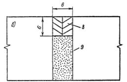
Рис. 4. Типовые конструкции поперечных швов расширения:
а - устраиваемые в покрытии; б - перед искусственными сооружениями; 1 - штыри; 2 - каркас-корзинка; 3 - деревянная доска-прокладка; 4 - битумная обмазка; 5 - колпачок из резины или полиэтилена; 6 - мастика; 7 - воздушный зазор в колпачке; 8 - герметизирующий материал или готовая резиновая прокладка; 9 - пористый легкосжимаемый материал
Рис. 5. Поперечный разрез кондуктора для монтажа закладных элементов шва расширения:
1 - стальные уголки длиной 3,75 м; 2 - стальные уголки длиной по 20 - 25 см для вертикальной и прямолинейной установки досок-прокладок (на длину шва 3,75 м и крепят к верстаку-столу четыре уголка); 3 - шурупы для крепления уголков к доскам верстака; 4 - отверстия в виде полукруга в уголке с радиусом, равным радиусу штыря плюс 1 мм
2.21. Для того чтобы предотвратить коррозию и исключить сцепление с бетоном, штыри в швах расширения и сжатия на длине 30 см следует покрывать слоем 0,2 - 0,3 мм расплавленного в котле битума. Длина штыря, не покрытого слоем битума, должна быть менее шести диаметров стержня (см. рис. 4). В продольных швах гладкие штыри изолировать не следует.
2.22. Для создания швов расширения необходимо применять прокладки. Прокладки следует устанавливать в проектное положение вместе со штырями. Штыри и прокладки должны быть прочно закреплены для того, чтобы предотвратить их смещение при распределении и уплотнении бетонной смеси. Прокладки и штыри укрепляют с помощью поддерживающих каркасов-корзинок из арматуры диаметром не менее 4 мм (см. рис. 4).
Допускаются другие конструкции поддерживающих каркасов-корзинок, которые должны быть равнопрочны и соответствовать схемам крепления штырей, показанных на рис. 4. Нельзя крепить штыри только к доске-прокладке без опоры каркасов-корзинок на основание, так как не будет обеспечено вертикальное и прямолинейное положение доски-прокладки в бетоне покрытия.
2.23. При устройстве паза шва расширения в затвердевшем бетоне для образования ровной трещины (после его усадки), которая служит маяком для нарезки шва, верх прокладки необходимо срезать на клин. Прокладка должна быть установлена так, чтобы после уплотнения бетона верх клина прокладки был ниже поверхности покрытия не более чем на 10 - 12 мм.
2.24. Швы сжатия отличаются один от другого геометрическими параметрами пазов, которые нарезают для уменьшения сечения покрытия на глубину не менее 0,25 его толщины. По конструкции и способу устройства паза различают три вида шва сжатия:
конструкция, устраиваемая в свежеуложенном бетоне (рис. 6, а);
конструкция, устраиваемая комбинированным способом путем закладки ленты в свежеуложенном бетоне с последующей нарезкой паза в затвердевшем бетоне (рис. 6, б);
конструкция двухступенчатого шва, устраиваемая в затвердевшем бетоне (рис. 6, в).
При малых объемах работ, строительстве бетонных покрытий с применением средств малой механизации, устройстве дополнительных элементов покрытия допускается применять швы, конструкция которых показана на рис. 6, а.
Пазы швов следует заполнять герметизирующими материалами.
Конструкция продольных швов показана на рис. 6, г, а поперечного шва коробления - на рис. 7.
а)
б)
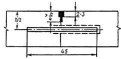
в)
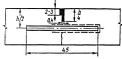
г)
Рис. 6. Конструкции поперечных швов сжатия и продольного шва
Рис. 7. Размещение штырей-анкеров в шве коробления (а), конструкция шва коробления (б) и схема крепления штырей-анкеров к продольным стержням на длину шва 3,75 м (в):
1 - штыри-анкеры из гладкой арматуры класса А-II диаметром 14 - 16 мм; 2 - продольные стержни т арматуры диаметром 6 - 8 мм; 3 - обмазка стержней-анкеров битумом; 4 - деревянная рейка; 5 - шов коробления; 6 - шов сжатия; 7 - продольный шов
2.25. Для повышения трещиностойкости и транспортно-эксплуатационных качеств покрытий, устраиваемых машинами на рельс-формах на дорогах II и III категорий при насыпях менее 3 м на основаниях из материалов, не укрепленных вяжущими, разрешается швы коробления чередовать со швами сжатия. При этом длину плит между поперечными швами следует назначать равной 3,5; 4 и 5 м, когда толщина покрытия равна соответственно 18, 20 - 22 и 24 см.
Чтобы повысить продольную устойчивость покрытия в швах расширения, рекомендуется вместо одного шва сжатия устраивать один шов коробления в плитах, примыкающих к шву расширения.
2.26. Ширина и минимальная глубина паза для заполнения мастиками должны назначаться в соответствии с данными табл. 6. При наличии в покрытии шва коробления ширину паза шва сжатия следует назначать исходя из суммарной длины двух плит между швами сжатия. Пазы швов коробления и продольных допускается заполнять мастиками на всю глубину.
Таблица 6
|
Расстояние между швами, м |
Ширина паза, мм |
Глубина нарезки паза в долях от толщины покрытия |
|
|
Шов сжатия..................... |
£ 5 - 8 |
8 - 12 |
³ 0,25 |
|
8 - 12 |
15 |
³ 0,25 |
|
|
15 - 20 |
20 |
³ 0,25 |
|
|
Шов коробления............ |
3,5 - 6 |
3-5 |
³ 0,33 |
|
Шов расширения........... |
По табл. 4 |
33 - 35 |
До верха доски - 30 - 55 мм |
|
Продольный шов........... |
- |
3 - 5 |
0,25 - 0,33 |
Примечание. Ширину паза швов сжатия допускается назначать по расчету, но не менее 3 мм.
2.27. На дорогах I - III категорий, при насыпях от 3 до 5 м, а также в зоне перехода насыпи в выемку на участке не более 20 - 40 м (в зависимости от глубины выемки и поперечной косогорности, кроме случаев, указанных в п. 2.28) бетонные покрытия в умеренном и континентальном климате следует устраивать из плит длиной 3,5; 4 и 5 м и толщиной соответственно 18, 20 - 22 и 24 см. В этих случаях при бетонировании комплектом машин на рельс-формах рекомендуется каждые две плиты соединять швом коробления, т.е. шов коробления устраивать только через шов сжатия, что позволит повысить транспортно-эксплуатационные качества и продольную устойчивость покрытия из коротких плит.
2.28. На дорогах I - III категорий с насыпями высотой более 3 м, из скальных грунтов, насыпями на болотах, построенными при частичном выторфовывании, насыпями выше 5 м из любых грунтов, у путепроводов через железные дороги в пределах до 200 м при различной высоте насыпи, а также на участках дорог индивидуального проектирования (где ожидаются неравномерные осадки земляного полотна) покрытие следует устраивать из плит длиной от 5 до 7 м и армировать их стальными плоскими сетками с расходом продольной арматуры на 1 м2 покрытия согласно табл. 7 и схемам армирования, приведенным на рис. 8.
2.29. На отдельных участках дорог I и II категорий с большой интенсивностью движения - соответственно более 10000 и 5000 авт./сут (на подходах к крупным городам) наряду с неармированными допускается устраивать покрытия из армированных плит длиной от 10 до 20 м с расходом продольной арматуры на 1 м2 покрытия согласно табл. 7.
В плитах длиннее 12 м допускается снижать толщину армированных покрытий на 2 см по сравнению с неармированными покрытиями толщиной 22 - 24 см.
Таблица 7
|
Толщина плиты, см |
Длина плиты, м |
||||
|
5 |
8 |
10 |
15 |
20 |
|
|
Расход продольной арматуры, кг/м2 |
|||||
|
24 |
- |
2,3 |
2,8 |
4,1 |
- |
|
20 - 22 |
1,8 |
2,0 |
2,5 |
3,7 |
4,5 |
|
18 |
1,2 |
1,4 |
1,7 |
2,5 |
3,4 |
Примечания: 1. Количество арматуры установлено из условия раскрытия трещин до 0,2 мм с целью предотвращения коррозии.
2. При промежуточной длине плит расход арматуры должен назначаться по интерполяции.
2.30. Покрытие шириной 7 - 7,5 м следует армировать сетками не шире 2300 мм. При длине плит до 7 м сетки следует располагать вдоль продольного шва и краев плит с перепуском (нахлесткой) стыков в продольном направлении на 30 см. В плитах длиннее 10 м сетки необходимо размещать равномерно по ширине покрытия и не доводить до поперечных швов на 50 см (расстояние между сеткой и штыревым соединением в поперечном шве должно быть 25 - 30 см).
Минимальное и максимальное расстояние между осями рабочих продольных стержней в сетках допускается соответственно 100 мм и 200 мм. При несплошном армировании покрытия, которое рекомендуется на дорогах II и III категорий с интенсивностью движения до 5000 авт./сут. и насыпями выше 5 м, в сетке, укладываемой вдоль края одной плиты, должно быть не менее семи продольных стержней, а вдоль продольного шва одной плиты не менее трех стержней (см. рис. 8, б). Наибольшее расстояние между осями поперечной гладкой арматуры диаметром до 6 мм должно быть равно 50 см.
Рис. 8. Примерные схемы армирования плит длиной до 7 м
2.31. В однослойных покрытиях сетки необходимо укладывать на 6 см ниже верхней поверхности плит, в двухслойных - между верхним и нижним слоями. В плитах длиннее 8 м сетки допускается располагать на уровне половины толщины покрытия.
При строительстве покрытия машинами со скользящими формами разрешается армировать только продольными стержнями, располагая их на уровне половины толщины покрытия.
2.32. С целью более эффективной работы плит длиной 4,5 и 6 - 7 м допускается применять плоские сетки длиной соответственно 2,5; 3 и 3,5 м при общем расходе арматуры на всю плиту согласно данным табл. 7. Такие сетки необходимо укладывать в средней части плиты с равным удалением концов сетки от середины плиты (см. рис. 8, а и 8, в). Схемы армирования, изображенные на рис. 8, а и 8, б, различаются по диаметру арматуры продольных стержней при одинаковой их массе на 1 м2 плиты. При этом на 1 м2 покрытия, построенного на основании из грунтов, укрепленных вяжущими, расход арматуры допускается уменьшать на 15 %.
2.33. Для армирования покрытий следует применять плоские сварные сетки, изготовляемые на заводе или на месте строительства, с продольной рабочей арматурой из горячекатаной стали периодического профиля класса А-II. Сетки заводского изготовления должны подбираться по ГОСТу на сварные сетки для армирования железобетонных конструкций с расходом арматуры, указанным в табл. 7. Длину плоских сеток по осям крайних поперечных стержней следует назначать исходя из удобства работы, и оговаривать в заказе.
Для сеток, изготовляемых на месте строительства количество арматуры следует подбирать по табл. 7. При изготовлении сеток на месте строительства не допускается применение электросварки в местах пересечений стержней.
2.34. При строительстве покрытий на дорогах II категории с основаниями из песка и гравийно-песчаных смесей края плит, примыкающие к обочинам, следует армировать двумя стержнями из арматуры периодического профиля диаметром 12 мм. Стержни необходимо располагать на 5 см выше подошвы плит, при этом первый стержень должен быть на расстоянии 10 см от боковой грани плиты, а второй - на 20 см от первого. Стержни не доводят на 50 см до поперечных швов.
При укреплении обочин монолитным бетоном в соответствии с указаниями СНиП на проектирование автомобильных дорог в них необходимо устраивать швы сжатия и расширения без армирования как продолжение швов сжатия или расширения покрытий.
2.35. Толщину бетонных оснований разрешается назначать по расчету, приведенному в «Методических рекомендациях по проектированию и строительству дорожных одежд с асфальтобетонными покрытиями на основаниях из бетона разных марок» (Союздорнии, М., 1971).
2.36. В бетонных основаниях необходимо устраивать продольные и поперечные швы сжатия из бетона марок 150 - 200. Расстояние между швами сжатия должно быть 5 м при основании толщиной 20 см и более и 4 м, если оно тоньше 20 см. Швы сжатия и продольные следует устраивать в свежеуложенном бетоне, закладывая в них прокладки из изола или полиэтилена. В швах сжатия и продольных необходимы штыревые соединения. Количество штырей, их размеры и порядок размещения следует принимать такими же, как при устройстве бетонных покрытий.
2.37. Расстояние между швами расширения в бетонных основаниях следует назначать по табл. 8.
Таблица 8
|
Марка бетона основания |
Расстояние между швами расширения |
|
|
Покрытие и основание, устраиваемые при температуре воздуха выше +5 °С в течении одного строительного сезона |
Основание из бетона марок 75 - 200 |
Швы расширения не устраивают |
|
Бетонирование в зимних условиях при температуре воздуха от +5 до -10 °С |
Основание из бетона марок 150 - 200 |
40 м - в континентальном климате; 60 м - в умеренном климате |
|
Бетонирование в любое время года с устройством покрытия через 1 - 3 года |
Основание из бетона марок 150 - 200, швы сжатия или поперечные трещины в основании подвержены засорению песком, щебнем и др. |
30 - 40 м |
|
Основание из бетона любых марок, независимо от сезона бетонирования, примыкающее к мостам, путепроводам, либо пересекающее дорогу с покрытиями или основаниями жесткого типа в одном уровне |
Перед мостами и у пересечения дорог устраивают не менее 3 швов расширения через 1 - 2 плиты или 15 - 20 м, если перед ними в основании длиной более 100 м не устроены швы расширения |
Бетон
3.1. Требования к бетону покрытий и оснований и материалы для его приготовления должны соответствовать указаниям ГОСТ на дорожный бетон. Марку бетона по прочности следует назначать в соответствии с табл. 9.
Таблица 9
|
Дороги I и II категории |
Дороги III категории |
|||
|
Однослойное или верхний слой двухслойного покрытия |
Нижний слой двухслойного покрытия |
Однослойное или верхний слой двухслойного покрытия |
Нижний слой двухслойного покрытия |
|
|
Марка бетона |
||||
|
Растяжение при изгибе |
50 |
40 |
45 |
35 |
|
Сжатие................ |
400 |
300 |
350 |
250 |
Примечания: 1. На дорогах II категории, если в первые три года эксплуатации бетонного покрытия интенсивность движения не превысит 3000 авт./сут., допускается применять марку бетона по сжатию 350 и по растяжению при изгибе 45.
2. При подборе состава бетона с добавками ПАВ допускается снижать предел прочности бетона при сжатии на 10 %, сохраняя проектную марку по прочности на растяжении при изгибе.
Для строительства оснований усовершенствованных капитальных покрытий следует применять бетон, марки которого по прочности соответствуют указаниям ГОСТ на дорожный бетон.
3.2. Морозостойкость бетона однослойных и верхнего слоя двухслойных покрытий, а также оснований усовершенствованных капитальных покрытий должна соответствовать требованиям ГОСТ на дорожный бетон.
3.3. Требуемая морозостойкость бетона обеспечивается применением материалов для его приготовления в соответствии с нормами ГОСТ на дорожный бетон, проектированием состава бетонной смеси по методике, изложенной в настоящей Инструкции, обязательным применением воздухововлекающих ПАВ, строгим соблюдением содержащихся в Инструкции правил приготовления, транспортирования, распределения и уплотнения смеси, а также своевременным и эффективным уходом за бетоном в процессе его твердения.
3.4. Испытание на морозостойкость должно производиться до начала строительства при подборе состава бетона на материалах, намеченных к использованию в строительстве покрытий.
3.5. Для повышения морозостойкости и стойкости бетона против совместного действия растворов хлористых солей, применяемых для борьбы с гололедом, и мороза, а также для улучшения технологических свойств бетонной смеси должны применяться комплексные (совместно пластифицирующие и воздухововлекающие) добавки ПАВ в соответствии с указаниями ГОСТ на дорожный бетон и табл. 10 Инструкции.
Таблица 10
|
Содержание ПАВ, % массы цемента |
Примечание |
|
|
Концентраты сульфитно-дрожжевой бражки (СДБ) |
0,15 - 0,25 |
В расчете на сухое вещество |
|
Мылонафт |
0,05 - 0,1 |
В расчете на товарный раствор, содержащий 45 - 50 % воды |
|
Асидол-мылонафт (после омыления или эмульгирования) |
0,05 - 0,1 |
То же |
|
Нейтрализованная воздухововлекающая смола (СНВ) |
0,005 - 0,03 |
В расчете на сухое вещество |
|
ГКЖ-94 |
0,1 - 0,2 |
В расчете на исходное вещество 100 %-ной концентрации |
Указанное в табл. 10 количество поверхностно-активных веществ (ПАВ) является ориентировочным и должно уточняться при подборе состава бетонной смеси в зависимости от допускаемого ГОСТ на дорожный бетон объема вовлеченного воздуха.
При приготовлении бетона на заполнителях из карбонатных пород в качестве ПАВ, повышающего морозостойкость бетона, как правило, следует применять гидрофобную кремнийорганическую жидкость ГКЖ-94.
Бетонная смесь
Бетонная смесь должна иметь подобранный зерновой состав с достаточным количеством песка и растворной части, хорошую удобообрабатываемость (отделываемость), обеспечивающие получение ровной и замкнутой поверхности покрытия при принятой подвижности или жесткости. Она должна обладать достаточной связанностью, не расслаиваться во время транспортирования и распределения по основанию. Бетонная смесь должна обладать высокой воздухоудерживающей способностью и при укладке машинами со скользящими формами, кроме того, создавать устойчивые кромки и боковые грани после прохода бетоноукладчика.
3.7. Подвижность или жесткость бетонной смеси на месте укладки во время уплотнения должны соответствовать требованиям стандарта на дорожный бетон.
В соответствии с указаниями СНиП по производству и приемке работ при строительстве автомобильных дорог при устройстве бетонных покрытий комплектом машин со скользящей опалубкой показатели подвижности или жесткости бетонной смеси перед уплотнением выбираются с учетом принятой скорости движения бетоноукладчика и должны соответствовать данным табл. 11.
Во избежание недопустимых деформаций кромок и боковых граней покрытия после прохода бетоноукладчика со скользящей опалубкой не следует использовать бетонные смеси с осадкой конуса на месте укладки более 4 см. С этой же целью при строительстве многополосных покрытий не следует использовать бетонные смеси с осадкой конуса более 2 см.
Таблица 11
|
Подвижность (осадка конуса), см |
Жесткость, с |
|
|
£ 2 |
1 - 3 2 |
8 - 10 |
|
2 - 2,5 |
2 - 4 3 |
5 - 8 |
|
2,5 - 3 |
3 - 5 4 |
3 - 5 |
Примечание. В числителе - допускаемые пределы подвижности смеси, в знаменателе - среднее значение.
Цементы
3.8. Для бетона покрытий и оснований следует применять портландцемент без минеральных добавок или с ними и шлакопортландцемент в соответствии с указаниями стандарта на дорожный бетон, а также Технических условий на портландцемент для бетона дорожных и аэродромных покрытий.
Дорожный бетон, как правило, нужно готовить на цементе, имеющем срок хранения после отгрузки не более 2 - 3 месяцев. При поставке цемента зимой следует заготавливать преимущественно цемент с введенными при его помоле гидрофобизирующими ПАВ. Цемент со сроком хранения более одного месяца после отгрузки должен быть испытан перед использованием.
Мелкий заполнитель
3.9. В качестве мелкого заполнителя в дорожном бетоне следует применять пески природные или дробленые, в том числе обогащенные и фракционированные, а также дробленые пески из отсевов дробления, в том числе обогащенные, соответствующие требованиям стандартов на песок для строительных работ и на дорожный бетон.
Крупный заполнитель
3.10. В качестве крупного заполнителя в дорожном бетоне следует применять щебень, гравий, щебень из гравия, щебень из доменного шлака, удовлетворяющие требованиям соответствующих стандартов, а также стандарта на дорожный бетон.
3.11. Зерновой состав каждой фракции или смесей нескольких фракций крупного заполнителя должен находиться в пределах, указанных в стандарте на дорожный бетон. Количество фракции размером 5 - 20 мм в смеси крупного заполнителя с наибольшим размером зерен 40 мм следует, как правило, принимать не менее 50 % по массе.
Ускорители твердения
3.12. В качестве ускорителей твердения цемента следует преимущественно применять: хлорид кальция CaCl2 гранулированный, плавленый или жидкий; хлорид натрия NaCl в виде поваренной пищевой или технической соли.
Хлориды кальция и натрия должны удовлетворять требованиям соответствующих стандартов или технических условий.
3.13. Оптимальное количество хлорида кальция или хлорида натрия необходимо устанавливать экспериментальным путем при подборе состава бетона. Количество указанных добавок для бетона, твердеющего при среднесуточной температуре наружного воздуха более 5 °С и минимальной суточной температуре выше 0 °С, не должно превышать следующих величин:
в неармированных или конструктивно армированных бетонных покрытиях - 3 % массы цемента;
в железобетонных и армобетонных покрытиях с ненапрягаемой расчетной арматурой диаметром более 5 мм - не более 2 % массы цемента.
Добавки хлорида кальция и хлорида натрия в неармированные бетонные покрытия в количестве, превышающем указанные выше нормы, следует применять в соответствии с указаниями по строительству автомобильных дорог в зимних условиях.
3.14. Хлорид кальция и хлорид натрия нельзя добавлять в бетоны, предназначенные для устройства предварительно напряженных покрытий.
Арматурная сталь
3.15. Штыри следует изготовлять из стержневой горячекатаной гладкой арматурной стали класса А-I.
3.16. Для армирования покрытий следует применять сварные плоские сетки с продольной рабочей арматурой из стержневой горячекатаной стали периодического профиля класса А-II в соответствии с указаниями раздела 2 Инструкции.
Материалы для прокладок температурных швов
3.17. Прокладки, устанавливаемые в швах расширения, нужно изготавливать из чистообрезных досок I и II сортов из мягких пород древесины (ели, сосны).
Прокладки из других материалов должны быть упругими и достаточно жесткими для установки и закрепления их в проектное положение.
Прокладки из листового материала для швов сжатия, закладываемые в свежеуложенный бетон, должны быть морозостойкими, бензо- и маслостойкими. Для таких прокладок разрешается применять изол, удовлетворяющий требованиям соответствующего стандарта.
Материалы для ухода за бетоном
3.18. Пленкообразующие материалы для ухода за свежеуложенным бетоном должны удовлетворять следующим требованиям:
хорошо распределяться на поверхности бетона и создавать сплошную пленку, обладающую достаточной влагоудерживающей способностью и сцеплением с бетоном в течение не менее 28 дней;
не оказывать вредного влияния на здоровье рабочих при условии соблюдения правил техники безопасности; не ухудшать процессы твердения и долговечность бетона; в момент нанесения жидкостей их вязкость не должна превышать 20 с по вискозиметру ВЗ-4;
период формирования пленки при температуре воздуха +20 °С не должен превышать 5 ч;
пленка не должна уменьшать сцепления колес автомобиля с бетонным покрытием; пленка предпочтительно должна иметь светлый цвет.
3.19. Для ухода за бетоном следует применять пленкообразующие материалы:
анионные быстрораспадающиеся битумные эмульсии класса БА-2; допускаются быстрораспадающиеся эмульсии класса БА-1 и среднераспадающиеся эмульсии класса СА;
светлые пленкообразующие материалы ПМ-86 (помароль), ПМ-100А, ПМ-100АМ;
лак этиноль.
С разрешения Минтрансстроя в каждом отдельном случае допускается применять разжиженные битумы. Для использования других пленкообразующих материалов, не указанных в п. 3.19, также необходимо разрешение Минтрансстроя, выдаваемое на основе специальных испытаний.
Жидкости, используемые для осветления пленкообразующих материалов, должны иметь следующий состав (по массе):
суспензия алюминиевой пудры - одна часть алюминиевой пудры ПАП-I или ПАП-II и три части осветительного керосина;
водный раствор извести - одна часть извести-пушонки и четыре части воды.
Все материалы, применяемые для ухода за бетоном, должны удовлетворять требованиям соответствующих стандартов и технических условий.
Материалы для герметизации температурных швов
3.20. Материалы для герметизации температурных швов должны обеспечивать их водонепроницаемость и предохранять швы от засорения песком, щебнем, гравием и другими твердыми материалами.
Для заполнения швов в бетонных покрытиях разрешается применять следующие герметизирующие материалы: мастики, пасты (вводимые в швы под давлением), готовые эластичные прокладки.
Материалы-заполнители швов могут быть холодные, применяемые без предварительного подогрева, а также горячие, подогреваемые перед употреблением.
Заполнители, укладываемые в холодном состоянии должны отверждаться при температуре окружающего воздуха (не ниже +5 °С) не позднее 10 сут.
3.21. Заполнители должны иметь следующую температуроустойчивость для различных дорожно-климатических зон:
I зона...................................................................... от -40 до +50 °С
II зона..................................................................... от -30 до +60 °С
III - V зона............................................................. от -20 до +80 °С
Заполнитель должен обладать способностью деформироваться в интервалах указанных температур без нарушения сцепления с бетоном боковых граней плит (сцепление заполнителя шва с бетоном должно сохраняться в течение всего срока его работы).
3.22. Для герметизации деформационных швов бетонных покрытий дорог в зависимости от категории дороги и дорожно-климатической зоны разрешается применять резинобитумные мастики (РБВ), полимерно-битумные мастики (ПБМ и МББГ) и тиоколовые герметики типа гидром, указанные в табл. 12.
Таблица 12
|
Температура размягчения, °С |
Категория дороги |
Дорожно-климатическая зона |
|
|
Резинобитумные мастики (РБВ) РБВ-25, 35, 50* |
160 |
I - III |
II - IV |
|
Резиновая крошка - 20 |
|
|
|
|
Кумародовая смола - 5 |
|
|
|
|
Битум БН-IV-58-75 |
|
|
|
|
Масло АК-15-0-7 |
|
|
|
|
Полиизобутилен П-200-0-5 |
|
|
|
|
Полимерно-битумные мастики (ПБМ) ПБМ-1 |
70 |
I - III |
II - IV |
|
Битум БН-V-33 |
|
|
|
|
Битум БНД-60/90-48 |
|
|
|
|
15 %-ный раствор ДСТ в бензине А-72-14 |
|
|
|
|
Асбестовая крошка - 5 |
|
|
|
|
ПБМ-2 |
80 |
I - III |
II - IV |
|
Битум БН-V-33 |
|
|
|
|
Битум БНД-60/90-48 |
|
|
|
|
15 %-ный раствор ДСТ в бензине А-72-10 |
|
|
|
|
Асбестовая крошка - 9 |
|
|
|
|
МББГ-70** |
70 |
I - III |
I - V |
|
Битум БН-V-70 |
|
|
|
|
Бутилкаучук - 15 |
|
|
|
|
Асбестовая крошка - 15 |
|
|
|
|
Полимерный герметик Гидром*** |
- |
I, II |
I - V |
|
Герметизирующая паста - 100 |
|
|
|
|
Отверждающая паста № 30 - 20 |
|
|
|
* Черниговский завод кровельных материалов.
** Лилойский комбинат строительных материалов.
*** Казанский завод РТИ.
3.23. Материалы для приготовления резинобитумной мастики (РБВ) должны соответствовать нормативным документам на битум, резиновую крошку, кумароновую смолу, автотракторное масло АК-15, полиизобутилен П-200.
Материалы для приготовления полимерно-битумной мастики должны соответствовать нормативным документам на строительный битум марки БН-V и нефтяной дорожный битум марки БНД-60/90, дивинилстирольный термоэластопласт, автомобильный бензин А-72.
Битумнобутилкаучуковая мастика МББГ-70 выпускается промышленностью по техническим условиям Министерства промышленности строительных материалов СССР.
В качестве грунтовок для мастики на основе битума разрешается применять вязкие битумы марки БНД-60/90 или БНД-40/60, разжиженные бензином или зеленым маслом в соотношении 1:1, а также жидкие битумы по ГОСТ на нефтяные дорожные битумы.
3.24. Полимерный герметик гидром, приготавливаемый на основе жидкого тиокола, должен состоять из герметизирующей пасты по техническим условиям Миннефтехимпрома СССР и из отверждающего реагента (пасты № 30) по техническим условиям Миннефтехимпрома СССР.
Герметик гидром должен быть использован в соответствии с техническими условиями не позднее трех месяцев со дня выпуска.
3.25. Следует применять, как правило, резинобитумные мастики, битумнобутилкаучуковые мастики и тиоколовый герметик, выпускаемые промышленностью.
3.26. Полимерно-битумные мастики разрешается приготавливать централизованно на базах и поставлять потребителям в таре с приложением паспорта, в котором указывают их характеристики.
3.27. При отсутствии централизованного снабжения допускается готовить мастики на строительном объекте.
Полимерно-битумные мастики следует готовить под руководством представителя лаборатории в следующем порядке:
в металлической емкости полностью растворяют дивинилстирольный термоэластопласт (ДСТ) в бензине при температуре 18 - 20 °С в течение 3 - 4 сут;
в котле нагревают битум БН-V до 140 °С и смешивают его с нагретым до 120 °С битумом БНД-60/90;
при 120 °С и потушенной топке в расплавленную смесь битума добавляют 15 %-ный раствор ДСТ и тщательно перемешивают; затем смесь подогревают до 140 °С, выдерживают при этой температуре в течение 3 - 4 ч до полного улетучивания легких фракций растворителя;
в подготовленную таким образом смесь примешивают минеральный порошок (асбестовую крошку) и варят в течение 30 мин при тщательном перемешивании до получения однородной по составу мастики.
3.28. Для заполнения случайных трещин не шире 5 мм применяют мастику в холодном состоянии, приготавливаемую на основе быстрораспадающейся или медленнораспадающейся битумной эмульсии с добавкой латекса СКС-65 в количестве 15 % по массе.
Общие положения
4.1. Подбор состава заключается в определении рационального соотношения между компонентами бетонной смеси в соответствии с предъявляемыми требованиями:
к подвижности (жесткости) бетонной смеси;
к объему вовлеченного воздуха (или выделившегося газа) в свежеуложенной бетонной смеси;
к долговечности бетона, т.е. длительной и устойчивой его работе в окружающей среде в соответствии с проектными марками морозостойкости;
к прочности бетона в соответствии с проектными марками прочности.
4.2. По технологическим свойствам бетонная смесь должна удовлетворять требованиям, изложенным в п. 3.6 Инструкции.
Наиболее существенное положительное влияние на воздухоудерживающую способность бетонной смеси оказывает увеличение относительной доли песка в смеси заполнителей (или коэффициента раздвижки щебня раствором), дисперсности песка и количества воздухововлекающей добавки. Устойчивость кромок и боковых граней свежеотформованной плиты повышается с уменьшением подвижности бетонной смеси, крупности заполнителя и с увеличением относительной доли песка в смеси заполнителей (коэффициента раздвижки щебня раствором).
4.3. Показатель подвижности (жесткости) бетонной смеси должен назначаться с учетом уплотняющей способности бетоноотделочной машины, скорости бетонирования, удобообрабатываемости (отделываемости), длительности транспортирования, периода между укладкой и уплотнением, температуры воздуха в период производства работ.
4.4. Объем вовлеченного воздуха должен назначаться по стандарту на дорожный бетон с учетом длительности транспортирования бетонной смеси и температуры воздуха в период производства работ. Содержание воздуха в бетонной смеси при подборе состава бетона следует регулировать изменением дозировки воздухововлекающей добавки.
4.5. При подборе состава определение показателя подвижности, объема вовлеченного воздуха, а также изготовление контрольных образцов должно производиться не ранее 30 мин и не позднее 60 мин после приготовления бетонной смеси. Бетонная смесь должна быть защищена от испарения воды затворения.
4.6. При подборе состава бетона с воздухововлекающей или комплексной добавкой ПАВ (совместно пластифицирующей и воздухововлекающей) необходимо, как правило, подвижность бетонной смеси, кроме осадки конуса, оценивать и показателем жесткости.
4.7. Подбор состава бетона должен производиться расчетно-экспериментальным методом с расчетом по формулам и графикам и с последующим уточнением экспериментальным путем в следующем порядке:
определить расчетным путем ориентировочное водоцементное отношение (В/Ц), необходимое для получения заданной марки бетона по прочности на растяжение при изгибе;
назначить в зависимости от требований к бетону средний объем вовлеченного воздуха и ориентировочное количество добавки ПАВ;
определить водопотребность бетонной смеси принятой подвижности (жесткости) на основе имеющегося в лаборатории опыта или по рекомендуемым в литературе таблицам и графикам;
рассчитать по величинам водопотребности и В/Ц содержание цемента в 1 м3 бетона;
назначить коэффициент раздвижки Кр крупного заполнителя раствором и найти содержание крупного заполнителя в 1 м3 бетона;
рассчитать содержание песка в 1 м3 бетона;
уточнить экспериментальным путем состав бетона.
4.8. Подбор состава бетона должен производиться на материалах, удовлетворяющих требованиям ГОСТ на дорожный бетон и раздела 3 Инструкции и принятых к производству работ.
Бетонную смесь при подборе состава следует приготавливать в бетоносмесителях, например марки С-674А, с объемом годового замеса 60 л, поскольку от способа перемешивания компонентов зависит объем вовлеченного воздуха. Длительность перемешивания после введения раствора ПАВ и воды затворения должна быть в пределах 1,5 - 2 мин.
Расчет состава бетона
4.9. Ориентировочно В/Ц следует рассчитывать по формулам: для бетона с нормированным стандартом на дорожный бетон
содержанием вовлеченного воздуха В/Ц = 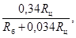
для бетона без вовлеченного воздуха В/Ц
= 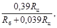
гдеRц - предел прочности цемента на растяжение при изгибе, определенный экспериментально или принятый для данной марки цемента по ГОСТ на портландцемент и шлакопортландцемент;
Rб - марка бетона по прочности на растяжение при изгибе.
4.10. Ориентировочно содержание воды следует назначать не более 165 - 170 кг.
Для снижения водопотребности бетонной смеси, помимо совместного применения пластифицирующих и воздухововлекающих добавок ПАВ, следует применять обогащенные мелкий и крупный заполнители, укрупняющие добавки природного и дробленого песков.
4.11. Содержание цемента следует определять по формуле:
Ц = В:В/Ц,
где В - содержание воды, кг/м3;
Ц - содержание цемента, кг/м3.
4.12. Содержание крупного заполнителя следует определять по формуле:
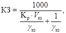
где КЗ - содержание крупного заполнителя в 1 м3 бетона, кг;
Кр - коэффициент раздвижки, минимальное значение которого для бетона с вовлеченным воздухом в зависимости от крупности песка следует назначать в пределах 1,7 - 1,9 и в дальнейшем уточнить экспериментально;
Vкз - пустотность крупного заполнителя в стандартном насыпном состоянии в виде относительной величины, которую следует находить по формуле:
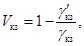
γ'кз- объемная насыпная масса крупного заполнителя, кг/л;
γкз - плотность крупного заполнителя, кг/л, определяемая по стандарту на методы испытания щебня из естественного камня, гравия, щебня из гравия для строительных работ.
Минимальное значение коэффициента раздвижки щебня раствором в зависимости от крупности песка следует принимать равным:
1,7 - для мелких песков с модулем крупности от 1,5 до 2;
1,8 - для средних песков с модулем крупности от 2 до 2,5;
1,9 - для крупных песков с модулем крупности более 2,5.
Максимально возможное значение коэффициента раздвижки разрешается уточнять экспериментально на пробных замесах путем построения графика зависимости осадки конуса и показателя жесткости бетонной смеси с одинаковым В/Ц и водосодержанием от коэффициента раздвижки.
Максимальное значение коэффициента раздвижки соответствует значению коэффициента раздвижки на графике, при котором показатели подвижности и жесткости бетонной смеси существенно не изменяются по сравнению со смесью с минимальными коэффициентами раздвижки.
Максимальное значение коэффициента раздвижки не должно превышать минимальное значение более чем на 0,2 - 0,3.
Под крупным заполнителем следует понимать смесь отдельных его фракций, подбираемую экспериментально по наибольшей массе.
4.13. Содержание песка в 1 м3 бетона следует определять по формуле:
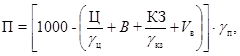
где Ц - содержание цемента в 1 м3 бетона, кг;
Vв - объем вовлеченного воздуха в 1 м3 бетона, принимаемый по стандарту на дорожный бетон, л;
γц и γп - соответственно плотности цемента и песка, кг/л.
4.14. Для обеспечения необходимого количества вовлеченного воздуха следует при расчете состава бетона назначить добавку СНВ (смолы нейтрализованной воздухововлекающей) в количестве 0,01 - 0,02 % от массы цемента в расчете на сухое вещество смолы и добавку СДБ (сульфитно-дрожжевой бражки) в количестве 0,2 % от массы цемента в расчете на сухое вещество.
4.15. Номинальный состав бетона по массе следует определять по формуле:
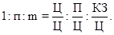
Экспериментальное уточнение расчетного состава бетона
водопотребности смеси, количества воздухововлекающей, а также пластифицирующей (при комплексном их применении) добавок ПАВ и коэффициента раздвижки щебня раствором;
В/Ц для получения заданных марок бетона по прочности на растяжение при изгибе и сжатии.
Производственные поправки к номинальному составу бетона
4.18. Экспериментально уточненный состав бетона является номинальным, так как в нем не учтена влажность заполнителей.
В номинальный состав бетона следует вносить поправки на фактическую влажность заполнителей, чтобы получить рабочий состав бетона.
Если влажность песка Wп (%), а влажность крупного заполнителя Wкз (%), то рабочий расход воды Вр (кг), песка Пр (кг) и крупного заполнителя КЗр (кг) должны соответственно составить:
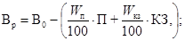
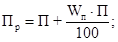
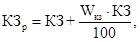
где 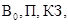
4.19. Рабочий состав бетона (содержание воды) должен корректироваться с учетом концентрации водных растворов ПАВ.
4.20. Выбранный в лаборатории состав бетона должен быть проверен в производственных условиях при пробном бетонировании. При этом необходимо оценивать качество уплотнения и отделки поверхности бетона, а также устойчивость кромок и боковых граней покрытия после прохода бетоноукладчика. В случае необходимости состав бетонной смеси следует корректировать.
Пример подбора состава бетона
4.21. Требуется подобрать состав бетона для однослойного покрытия автомобильной дороги марок по прочности на растяжение при изгибе 50 (5 МПа), по прочности при сжатии 350 (35 МПа), а по морозостойкости Мрз 200. Бетон укладывают бетоноукладочной машиной на гусеничном ходу со скользящими формами со скоростью до 2 м/мин (требуемая осадка конуса смеси равна 2 см). Материалы: цемент марки 400 (40 МПа) прочностью на растяжение при изгибе 6 МПа, плотность - 3,1 кг/л; крупный заполнитель - гранитный щебень, состоящий из 60 % фракции 5 - 20 мм и 40 % фракции 20 - 40 мм; плотность щебня - 2,60 кг/л, объемная насыпная масса смеси фракции - 1,47 кг/л; пустотность щебня - 0,435; мелкий заполнитель - песок с модулем крупности 2,2; плотность - 2,60 кг/л; вода - питьевая; добавки ПАВ - СДБ и СНВ.
4.22. Определяем В/Ц по формуле В/Ц
= 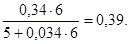
Это меньше предельного значения В/Ц по ГОСТ на дорожный бетон.
4.23. Для расчетов принимаем расход воды, равный 150 кг.
4.24. Расход цемента составляет: Ц = 150:0,39 = 385 кг.
4.25. Расход добавок составляет: СДБ = 0,002´385 = 0,77 кг, СНВ = 0,0001´385 = 0,0385 кг.
4.26. Расход щебня составляет: 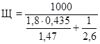
4.27. Расход песка составляет:
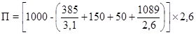
(50 л - объем вовлеченного воздуха на 1 м3, требуемый ГОСТ на дорожный бетон).
4.28. Расчетная объемная масса бетонной смеси составляет 2292 кг/м3.
4.29. Расчетный состав бетонной смеси уточняется экспериментально в соответствии с п.п. 4.16 - 4.17 Инструкции.
Общие положения
5.1. При использовании комплекта высокопроизводительных машин следует производить чистовую планировку поверхности земляного полотна с помощью профилировщика. Кроме того, при неоднородной плотности верха земляного полотна профилировщиком необходимо произвести кирковку на глубину 15 - 20 см с одновременным увлажнением взрыхленного слоя и последующим уплотнением навесным вибробрусом. При уплотнении катками взрыхленного слоя за ними необходимо выполнить чистовую планировку профилировщиком.
5.2. При использовании комплекта высокопроизводительных машин основание и дополнительные слои (морозозащитный, дренирующий) следует устраивать с помощью профилировщика или распределителя бетонной смеси, оборудованных навесным уплотняющим вибробрусом. При уплотнении катками необходимо выполнить чистовую планировку поверхности.
Если используют комплект машин, передвигающихся по рельс-формам, окончательное уплотнение и профилирование песчаного основания и выравнивающего слоя из необработанного песка нужно производить планировочно-уплотняющей машиной после установки рельс-форм.
5.3. Обочины следует устраивать вслед за строительством бетонного покрытия в два приема:
часть обочин, примыкающую к покрытию, следует подсыпать грунтом на ширину не менее 0,5 м, чтобы предупредить подмыв основания и облом краев плит;
полную досыпку, уплотнение, укрепление и планировку обочин следует производить после набора бетоном прочности не менее 100 % от проектной.
Приготовление и транспортирование бетонной смеси
5.4. Для приготовления бетонной смеси следует использовать притрассовые передвижные бетонные заводы цикличного или непрерывного действия производительностью, соответствующей принятому темпу строительства бетонных покрытий. Конструкция бетоносмесителей гравитационного и принудительного перемешивания и режим приготовления должны обеспечивать получение бетонной смеси, которая по своим свойствам удовлетворяет требованиям ГОСТ на дорожный бетон, СНиП по производству и приемке работ при строительстве автомобильных дорог и данной Инструкции.
Бетонные заводы нужно размещать с учетом допускаемой ГОСТ на дорожный бетон продолжительности транспортирования бетонной смеси.
5.5. Приемку, хранение и переработку материалов для приготовления бетонной смеси следует производить, как правило, на прирельсовых базах. Для приема и хранения цемента рекомендуются наиболее экономичные в условиях дорожного строительства типовые сборно-разборные металлические склады. Они должны иметь необходимое оборудование для механизированной разгрузки цемента из железнодорожных вагонов или цементовозов.
5.6. Мелкий и крупный заполнители (песок, щебень, гравий, щебень из гравия) должны храниться раздельно по виду породы и фракциям на площадках, исключающих их загрязнение. Площадки, как правило, должны иметь покрытия из монолитного или сборного бетона. При отсутствии на площадке бетонного покрытия нижний слой штабеля заполнителей толщиной 10 - 20 см нельзя использовать для приготовления бетонной смеси.
5.7. При необходимости на бетонном заводе должно быть организовано разделение крупного заполнителя на фракции и его промывка. Следует, как правило, подавать заполнитель непосредственно в дозировочные бункера фронтальными погрузчиками на колесном ходу.
5.8. Режим работы бетоносмесителей цикличного и непрерывного действия должен соответствовать заводским инструкциям по эксплуатации. Продолжительность перемешивания бетонной смеси в бетоносмесителях цикличного действия следует устанавливать опытным путем.
При использовании высокопроизводительного бетоносмесителя гравитационного перемешивания цикличного действия с объемом готового замеса 5 - 6 м3 продолжительность перемешивания бетонной смеси с осадкой конуса не менее 2 см должна быть в пределах 60 - 90 с.
5.9. Дозирование материалов при приготовлении бетонной смеси должно производиться по массе. Исключением является дозирование воды и водных растворов добавок для бетона. Точность дозирования должна соответствовать величинам, указанным в главе СНиП на возведение монолитных бетонных и железобетонных конструкций.
5.10. Исправность работы дозаторов допускается оценивать ежедневно в начале смены. Весовые устройства следует устанавливать в соответствии с составом бетонной смеси и с учетом влажности заполнителей. Дозировку материалов разрешается изменять только работникам лаборатории.
5.11. Для максимального использования производительности комплекта бетоноукладочных машин и получения бетона однородного состава смесь следует выпускать равномерно и непрерывно в течение смены. Количество транспортных средств должно устанавливаться и корректироваться с учетом дальности транспортирования смеси и полной загрузки комплекта машин по устройству покрытия и исключения перерывов в подаче смеси к месту укладки.
5.12. Подвижность бетонной смеси с учетом времени транспортирования к месту укладки и температуры воздуха не должна превышать более чем на 1 - 2 см значений, указанных в ГОСТе на дорожный бетон и в табл. 11 Инструкции.
5.13. Бетонную смесь следует транспортировать в автобетоновозах или автомобилях-самосвалах, обеспечивающих удобную и быструю ее разгрузку в приемное устройство распределителя или на основание. Кузова автомобилей-самосвалов должны быть водонепроницаемыми, иметь исправные затворы и гладкую поверхность, а также приспособления для защиты бетонной смеси от высыхания или увлажнения атмосферными осадками. После выгрузки бетонной смеси кузова автобетоновозов или автомобилей-самосвалов необходимо промывать водой.
5.14. Строительство покрытия разрешается начинать от бетонного завода с использованием в последующем для транспортирования бетонной смеси, по возможности, готовых участков покрытия. Движение по покрытию разрешается после достижения бетоном проектной прочности, но не ранее окончания ухода за бетоном.
5.15. Для предотвращения расслоения бетонной смеси при погрузке ее в автомобили-самосвалы на бетонном заводе при необходимости должны устраиваться промежуточные накопительные бункера или лотки. Высота падения бетонной смеси при перегрузках не должна быть более 1,5 м.
5.16. После окончания каждой смены бетоносмесители необходимо промыть водой с крупной фракцией щебня или гравия. Накопительные бункера, воронки и лотки следует систематически очищать от бетонной смеси.
Подготовительные работы
Установка копирной струны
5.17. Копирная струна должна служить базой автоматической системы обеспечения ровности конструктивных слоев дорожной одежды. Ее следует устанавливать с одной или двух сторон машины.
От одной копирной струны допускается работа профилировщика с системой поперечной стабилизации уровня, распределителя бетонной смеси, трубного финишера и машины для нанесения пленкообразующих материалов.
Бетоноукладчик со скользящими формами должен работать, как правило, от двух копирных струн. При гарантированной требуемой ровности основания допускается работа бетоноукладчика от одной копирной струны.
5.18. Копирную струну следует закреплять параллельно оси дороги примерно на расстоянии 7 м. Высота установки копирной струны над верхом земляного полотна находится в пределах 0,5 - 1 м.
Копирную струну необходимо закреплять в кронштейнах на стойках, устанавливаемых на расстоянии не более 15 м друг от друга на прямых участках и 4 - 6 м на виражах. Длина участка с установленными копирными струнами должна быть не менее сменной производительности комплекта машин.
Установка рельс-форм
5.19. Рельс-формы следует устанавливать с точностью и надежностью, обеспечивающими заданную ровность поверхности покрытия. Рельс-формы необходимо устанавливать на прочное основание из грунта, укрепленного вяжущими, из щебня или гравия.
Допускается установка рельс-форм на уширенное основание дорожной одежды. Если такое основание не обеспечивает беспросадочного положения рельс-форм под нагрузкой от машин бетоноукладочного комплекта, то под рельс-формами должно быть устроено усиленное основание.
5.20. Перед установкой должно быть проверено состояние и правильность геометрических размеров рельс-форм. Искривления рельс-форм в вертикальной плоскости не должны превышать 2 мм, в горизонтальной плоскости - 5 мм. Разность высоты звеньев рельс-форм на стыках не должна превышать 2 мм.
Рельс-формы должны быть очищены от старого бетона.
5.21. Рельс-формы следует устанавливать только после приемки готового земляного полотна и основания на участке длиной не менее 500 м.
5.22. До строительства покрытия установленные рельс-формы должны быть обкатаны наиболее тяжелой машиной комплекта. Обнаруженные просадки необходимо устранить подбивкой основания и подъемкой рельс-форм с проверкой их положения нивелиром. Рельс-формы должны опираться на основание всей нижней плоскостью без просветов. Отклонения отметок рельс-форм от проектного положения после обкатки не должны превышать 5 мм.
5.23. Перед устройством выравнивающего слоя необходимо произвести контрольную проверку ровности основания с целью обеспечения требуемой толщины бетонного покрытия по всему поперечному его сечению. Для этого разрешается использовать передвигающийся по рельс-формам шаблон, снабженный металлическими штырями диаметром 20 мм, установленными через 20 - 30 см в соответствии с очертаниями основания (рис. 9).
Рис. 9. Шаблон для выверки основания под цементобетонное покрытие:
1 - металлические штыри; 2 - поперечный профиль основания
5.24. Для обеспечения нормальной работы машин по устройству покрытия длина участка с установленными рельс-формами должна быть не менее сменной производительности. При этом на один комплект бетоноукладочных машин должно быть не менее 600 м рельс-форм в две нитки.
5.25. Непосредственно перед укладкой бетонной смеси рельс-формы необходимо смазать с внутренней стороны отработанным маслом.
Их следует снимать не ранее 24 ч после укладки бетонной смеси. Отделять рельс-формы от бетона следует с помощью приспособления, сохраняющего целостность боковых граней и кромок плит.
5.26. Для быстрой и правильной установки рельс-формы рекомендуется пронумеровать, чтобы при перестановке сохранялся постоянный порядок их расположения.
При транспортировании на новое место, а также при раскладке погрузку рельс-форм следует производить с помощью крана. Запрещается перемещать их волоком.
Изготовление и установка прокладок и штырей для швов расширения
5.27. Прокладки для швов расширения должны изготавливаться из чистообрезных досок толщиной 30 мм, длиной 3500 мм (для покрытий шириной 7 м) или 3750 мм (для покрытий шириной 7,5 м).
Отверстия в прокладках для пропуска штырей должны быть на 1 мм меньше их диаметра. Прокладки должны быть подобраны, подготовлены и обработаны так, чтобы обеспечить прямолинейность шва расширения.
Для изоляции битумом штыри нагревают до 60 - 80 °С и опускают на требуемую длину в котел с расплавленным битумом; стержни укладывают на стеллаж под проветриваемым навесом.
Таким же способом разрешается производить обмазку штырей для швов сжатия. Концы штырей должны быть ровными, без заусенцев.
С целью образования в бетоне пространства для беспрепятственного скольжения в швах расширения штырей при температурных деформациях плит на обмазанные битумом концы перед укладкой смеси необходимо надевать гильзы-колпачки из резины или полиэтилена низких сортов. Воздушный зазор между торцом штыря и дном гильзы-колпачка должен быть равным толщине прокладки. Указанный зазор следует создавать путем устройства внутри гильз утолщения стенки в виде одного или двух наростов сечением 3´3 мм и длиной, равной толщине прокладки-доски. Гильзу-колпачок необходимо надеть на штырь до упора в указанный нарост. Внутренний диаметр гильзы должен быть равным диаметру штыря, чтобы исключить попадание цементного раствора внутрь гильзы-колпачка.
5.28. Прокладки вместе со штырями и поддерживающим каркасом следует устанавливать на окончательно уплотненном и спрофилированном основании или выравнивающем слое.
Перед установкой деревянные прокладки необходимо насыщать в течение 24 ч водой и устанавливать в проектное положение.
При установке по месту зазор между смежными прокладками по оси покрытия не допускается. Для того, чтобы предупредить образование бетонных пробок в швах по оси покрытия прокладки, до начала работ необходимо подогнать их по месту и сделать косой срез ножовкой (при двухскатном профиле) для создания плотного примыкания по всей толщине стыкования прокладок. По оси покрытия смежные прокладки должны соединяться металлическими скобами из проволоки диаметром 6 мм.
Прокладки должны быть закреплены металлическими штырями, которые забивают с обеих сторон через 0,8 - 1 м. Прокладки следует располагать в вертикальном положении и перпендикулярно оси покрытия по шаблону так, чтобы у плит получались прямые углы.
При строительстве бетонных покрытий машинами со скользящими формами разрешается в случае использования распределителя устанавливать прокладку шва следующим образом:
прокладку следует обрезать с обоих концов приблизительно на 15 см, чтобы обеспечить проход распределителя;
после прохода бетоноукладчика необходимо вручную восстановить прокладку шва на всю ширину покрытия.
При работе без распределителя прокладку следует обрезать с обоих концов приблизительно на 2 - 3 см.
Правильность установки прокладки, а также надежность ее крепления должен контролировать производитель работ.
Установка арматуры и штырей в швах сжатия
5.29. Арматура должна быть выправлена, очищена от грязи, масел, ржавчины и окалины. Арматуру следует устанавливать после окончательной отделки, планировки и уплотнения основания или выравнивающего слоя.
5.30. Стержни краевой арматуры необходимо укладывать на бетонные подкладки или подставки из арматурной стали диаметром 10 - 12 мм. Стержни допускается укладывать на валики из свежей бетонной смеси с опережением не более 10 м от места уплотнения, не допуская смещения арматуры при проходах бетоноотделочной машины.
5.31. Сварные сетки с рабочей арматурой диаметром не более 8 мм допускается укладывать на бетонную смесь, распределенную по основанию, с припуском на уплотнение и с учетом проектного положения, а также устанавливать в проектное положение в процессе бетонирования методом вибровтапливания в соответствии с указаниями данной Инструкции.
Сварные сетки с продольными стержнями диаметром свыше 8 мм следует устанавливать в проектное положение на приваренные к стержням сетки-подставки, как правило, до бетонирования. Расстояние между подставками разрешается принимать в пределах 0,8 - 1,2 м.
5.32. В поперечных швах сжатия штыри в проектное положение должны устанавливаться, как правило, на подставках из арматурной стали диаметром 8 - 10 мм. Допускается погружать штыри путем вибрации в бетон. Способ установки должен обеспечивать сохранение проектного положения штырей в процессе бетонирования.
Строительство бетонных покрытий
Общие указания
5.33. Перед началом работ по строительству покрытий необходимо проверить:
готовность подъездов для подачи бетонной смеси к месту укладки;
готовность бетонного завода и комплекта машин к работе, наличие поверхностных и глубинных вибраторов для дополнительного уплотнения бетонной смеси около прокладок швов расширения, а также у рельс-форм, уплотнения контрольных образцов и определения объема вовлеченного воздуха в бетонной смеси на месте укладки. Кроме того, вибраторы необходимы на случай выхода из строя бетоноотделочной машины;
наличие инструмента и приспособлений для исправления кромок и боковых граней покрытия после прохода машин со скользящими формами, разделки швов в свежеуложенном бетоне, контрольных реек для проверки ровности покрытия, шаблонов для выравнивания покрытия и удаления цементного молока при устройстве покрытий машинами на рельс-формах;
наличие основных и вспомогательных материалов для своевременного и бесперебойного ухода за свежеуложенным бетоном и защиты его от атмосферных воздействий.
5.34. Перед началом укладки бетонной смеси следует проверить:
правильность установки копирных струн;
правильность установки рельс-форм, надежность крепления стыковых соединений отдельных звеньев и тщательность смазки боковых стенок форм;
надежность крепления закладных элементов в конструкциях швов расширения, штырей поперечных швов сжатия и продольных швов, а также арматурных сеток;
достаточность увлажнения выравнивающего слоя из необработанного песка, песчаного, щебеночного или гравийного основания.
Распределение бетонной смеси
5.35. При строительстве покрытия шириной 7,5 м машинами со скользящими формами предварительное распределение бетонной смеси и случае применения распределителя следует осуществлять на ширину 7,3 - 7,35 м.
5.36. Бетонную смесь нужно распределять с учетом припуска на уплотнение. При строительстве покрытия машинами со скользящими формами на распределителе или бетоноукладчике в начале смены или после длительных перерывов в работе рекомендуется делать припуск 5 - 7 см, если проектная толщина покрытия равна 22 - 24 см. Указанный припуск необходимо выдержать на участке длиной 10 - 15 м, после чего его следует уменьшить до 3 - 5 см. При укладке бетонной смеси машинами, передвигающимися по рельс-формам, припуск рекомендуется устанавливать равным 2 - 3 см. При необходимости его величину корректируют в процессе укладки.
5.37. Бетонную смесь следует распределять равномерно по всей ширине покрытия без пропусков. Технологический разрыв между распределителем смеси и бетоноукладчиком зависит от погодных условий, наличия закладных элементов и составляет 10 - 30 м.
5.38. Бетонную смесь около прокладок швов расширения следует распределять так, чтобы не возникало отклонений прокладок и штырей от проектного положения. Для выполнения этого условия смесь необходимо распределять, установив бункер распределителя по оси прокладки.
Уплотнение бетонной смеси и отделка поверхности покрытия при работе машин со скользящими формами
5.39. Уплотнение бетонной смеси и отделку поверхности покрытия при устройстве его в скользящих формах следует осуществлять бетоноукладчиком на гусеничном ходу, входящим в комплект высокопроизводительных машин.
5.40. Рабочие органы машин комплекта следует регулировать, руководствуясь инструкцией по эксплуатации, с учетом того, что при настройке бетоноукладчика на работу в автоматическом, режиме скорость перемещения гидроцилиндров подъема и опускания главной рамы должна находиться в пределах 0,2 - 0,25 м/мин, на распределителе бетонной смеси - 0,3 м/мин, на гидроцилиндрах рулевого управления в пределах 0,3 - 0,4 м/мин у гусеничных машин и 0,5 - 0,6 м/мин у колесных.
При предварительной настройке рабочих органов бетоноукладчика необходимо:
первичную дозирующую заслонку устанавливать на 3 - 4 см выше низа боковых рам (проектной отметки поверхности покрытия);
глубинные вибраторы устанавливать при полностью выдвинутом штоке гидроцилиндра траверсы, как правило, в средней по толщине устраиваемого покрытия плоскости;
вторичную дозирующую заслонку (вибробрус) устанавливать на 0,5 - 1 см выше поверхности покрытия;
первичный качающийся брус устанавливать на 0,3 - 0,4 см выше проектной отметки поверхности покрытия с углом наползания, равным 1 - 2°;
вторичный качающийся брус устанавливать на 0,1 - 0,3 см выше отметки поверхности покрытия с углом наползания 1°;
выглаживающую плиту регулировать винтами по шнуру с поднятием передней части на 3 - 5 см.
5.41. Высота основных боковых форм (скользящей опалубки) и опалубки кромкообразователя должна быть приблизительно на 5 мм меньше толщины слоя укладываемого бетона.
Кромкообразующий узел следует настраивать с учетом остаточных деформаций свежеотформованного бетона после прохода бетоноукладчика.
Расстояние между боковыми формами (опалубки) кромкообразователя должно быть на 2 - 4 см меньше проектной ширины покрытия. Край кромкообразующего узла должен быть приподнят на 1 - 3 см выше поверхности покрытия.
5.42. Окончательную настройку рабочих органов бетоноукладчика следует производить при пробном бетонировании, используя бетонную смесь рабочего состава. В процессе укладки бетонной смеси следует тщательно контролировать геометрические параметры, ровность поверхности и качество кромки свежеотформованного бетонного покрытия и в случае необходимости дополнительно регулировать рабочие органы бетоноукладчика.
5.43. Качество уплотнения бетонной смеси глубинными вибраторами и виброформования бетонного покрытия зависит от того, насколько скорости движения бетоноукладчика соответствует подвижность (жесткость) бетонной смеси по данным табл. 11 Инструкции.
5.44. С целью обеспечения высокого качества бетонного покрытия бетоноукладчик должен перемещаться непрерывно с постоянной скоростью.
В процессе бетонирования глубинные вибраторы бетоноукладчика должны быть полностью погружены в смесь. Характерным признаком нормального протекания процесса уплотнения служит интенсивное «кипение» бетонной смеси, сопровождающееся выделением пузырьков воздуха.
В процессе бетонирования также следует обеспечивать сплошность поверхности уплотненной бетонной смеси после вибробруса с электромагнитными вибраторами и наличие валиков бетонной смеси, равномерных по всей ширине качающихся брусьев; высота валиков должна находиться в пределах 20 - 25 см для первичного качающегося бруса и 10 - 15 см для вторичного.
5.45. Эффективный радиус действия вибраторов (типа ИВ-79), установленных на бетоноукладчике со скользящими формами, при уплотнения бетонных смесей составляет 25 - 30 см. Глубинные вибраторы необходимо закреплять на траверсе с интервалом 40 - 50 см в количестве 14 шт. в положении, близком к горизонтальному, причем крайние вибраторы следует устанавливать в 15 - 20 см от боковой скользящей формы. При армировании продольного шва глубинный вибратор в зоне погружения штырей должен быть установлен перпендикулярно оси дороги.
5.46. При устройстве односкатных бетонных покрытий и виражей со стороны превышения необходимо создать дополнительный припуск бетонной смеси путем регулировки рабочих органов бетонораспределителя и бетоноукладчика.
5.47. При устройстве бетонного покрытия, армированного сварной сеткой из стержней периодического профиля диаметром более 8 мм, устанавливаемой на подставках, глубинные вибраторы в процессе уплотнения бетонной смеси должны быть подняты на 5 - 7 см выше арматуры, так чтобы вибраторы постоянно находились в бетонной смеси.
5.48. При устройстве бетонных покрытий, армированных сварной сеткой с рабочей арматурой диаметром до 8 мм, ее разрешается устанавливать в проектное положение в процессе бетонирования вибропогружателем, который монтируют на бетоноукладчике.
5.49. Чистовую отделку свежеуложенного бетонного покрытия следует осуществлять сразу за бетоноукладчиком трубным финишером с помощью легких труб и мешковины. Длину захватки разрешается выбирать в пределах 30 - 50 м.
Покрытие следует отделывать, как правило, не менее чем за три прохода машины.
При первом проходе выглаживающие трубы следует устанавливать в положение, при котором их концы располагаются вблизи кромок на 10 - 20 см с поднятой мешковиной. При втором проходе трубы необходимо развернуть в противоположное направление и т.д. Последний проход машины следует осуществлять при диагональном расположении труб, выходящих за пределы кромок покрытия на 12 - 15 см, и с опущенной мешковиной на поверхность покрытия.
Для улучшения отделки поверхности бетона допускается трубы и мешковину слегка увлажнять тонкораспыленной водой системы орошения.
5.50. Поперечную шероховатость на свежеуложенном бетоне следует создавать машиной, применяемой для нанесения пленкообразующих материалов, с помощью специальных щеток, заглубляемых в бетон. При этом машина должна работать в циклическом режиме на захватке длиной 3 м.
5.51. При необходимости защиту свежеуложенного бетона от атмосферных осадков в процессе бетонирования следует осуществлять рулонной пленкой шириной 8 м, закрепляемой на машине для нанесения пленкообразующих материалов.
Уплотнение бетонной смеси и отделка поверхности покрытия при работе машин, передвигающихся по рельс-формам
5.52. Уплотнение бетонной смеси и отделку покрытия следует производить передвигающимися по рельс-формам бетоноотделочными машинами Д-376 или ДБО-7,5.
лопастной вал установить регулировочными винтами так, чтобы края лопастей при вращении были на уровне поверхности распределенной бетонной смеси с учетом допуска на уплотнение;
заднюю кромку уплотняющего бруса установить на уровне головки рельс-форм. При этом указатель на шкале должен быть в нулевом положении;
обеспечить строгую параллельность нижних кромок уплотняющего и выглаживающего брусьев; эти брусья устанавливают под углом наползания, подбираемым опытным путем.
Правильность настройки рабочих органов машины Д-376 характеризуется следующими признаками: в процессе работы перед уплотняющим вибробрусом должен создаваться равномерный валик бетонной смеси высотой 8 - 10 см, а перед выглаживающим - валик высотой 2 - 4 см. При таких условиях разрешается уплотнять слой покрытия толщиной до 22 - 24 см, как правило, за один - два прохода машины на первой передаче (0,7 м/мин). На мостике отделочной машины должен постоянно находиться помощник машиниста для наблюдения за рабочими органами.
Если перед выглаживающим вибробрусом возникает слишком большой валик бетонной смеси, необходимо несколько опустить уплотняющий вибробрус. Если после этого перед уплотняющим брусом накапливается излишек смеси, необходимо опустить также лопастной вал машины Д-376 и уменьшить припуск на уплотнение, установленный на распределителе Д-375.
5.54. Если необходимо уплотнить бетон и отделать покрытие за два прохода машины по одному следу, при втором проходе не рекомендуется включать механизм вертикального качания уплотняющего бруса; переднюю же кромку бруса следует зафиксировать в приподнятом на 20 - 30 мм положении.
5.55. После прохода Д-376 поверхность покрытия должна быть без раковин и неровностей. Если раковины остаются, их необходимо заполнить бетонной смесью и пропустить машину вторично. Уплотнение и отделку бетона в покрытии следует производить участками длиной не менее 12 - 15 м, не допуская остановок бетоноотделочной машины с невыключенными вибраторами.
Остановки машины с невыключенными вибраторами неизбежно приводят к образованию неровностей и волн на покрытии. Ровность покрытия обеспечивается только при четкой безостановочной работе бетоноотделочной машины и бесперебойной подаче бетонной смеси с постоянной подвижностью (жесткостью) и зерновым составом.
5.57. Длиннобазовая отделочная машина ДБО-7,5, в отличие от машины Д-376, имеет дополнительно два диагональных вибрационных отделочных бруса и щетку для создания шероховатого покрытия.
Уплотнение бетонной смеси и отделку поверхности покрытия разрешается производить, как правило, за одни проход платины при подвижности бетонной смеси в пределах 1 - 2 см с учетом указаний пунктов 5.53 - 5.56 Инструкции.
5.53. После окончательного уплотнения и отделки поверхность покрытия должна быть обработана проволочной или капроновой щеткой с целью придания шероховатости. Щетки должны иметь длину 0,8 м, ширину 0,15 м с четырьмя рядами пучков проволоки или капрона длиной 10 - 12 см. Бороздки от щетки на бетоне должны быть перпендикулярны оси покрытия, а фактура обработанного щеткой покрытия однообразной.
5.59. При уплотнении и отделке покрытия бетонной смеси следует вести систематический контроль за ровностью поверхности. Ровность необходимо проверять, как правило, при помощи металлической трехметровой рейки, укладываемой в продольном и поперечном направлениях.
Неровности следует исправлять, используя дополнительные проходы бетоноотделочной машины или (при небольших неровностях) при помощи шаблона.
Уплотнение бетонной смеси и отделка поверхности дополнительных элементов покрытия
5.60. В местах уширения (на закруглениях, у съездов и т.п.), на площадках, примыкающих к основной дороге, покрытие следует устраивать с применением специальных бетоноукладчиков. Допускается использование площадочных вибраторов и виброреек. После уплотнения бетонной смеси площадочными вибраторами отделку поверхности допускается производить при помощи виброреек и путем выглаживания поверхности бетона брезентовыми или резиновыми лентами.
5.61. Уплотнение бетонной смеси поверхностными вибраторами следует производить прямыми непрерывными полосами с перекрытиями на 5 - 10 см. На каждой позиции вибратор допускается выдерживать 40 - 60 с; вибрирование смеси необходимо заканчивать при появлении на поверхности покрытия цементного «молока».
Строительство двухслойных покрытий
5.62. Организация работ по строительству двухслойного покрытия должна обеспечивать ритмичную укладку смеси с расчетом получения однородного, монолитного и плотного бетона по всей толщине покрытия.
Для этого разрыв во времени между укладкой нижнего и верхнего слоев при температуре воздуха 5 - 20 °С должен быть не более 1 ч; при температуре 20 - 25°С - не более 45 мин, при температуре 25 - 30 °С - не более 30 мин. Работы по строительству участка двухслойного покрытия следует заканчивать с расчетом укладки верхнего и нижнего слоев одновременно.
5.63. Строительство двухслойного покрытия разрешается осуществлять в такой последовательности:
бетонную смесь для нижнего и верхнего слоев покрытия распределить при помощи двух распределителей, имеющих боковую загрузку. Первый распределитель должен находиться в 15 - 20 м от второго и распределять смесь для нижнего слоя, второй - распределять смесь для верхнего слоя;
бетонную смесь для нижнего слоя распределять на 2 - 3 см выше проектной толщины нижнего слоя в плотном теле. Нижний слой покрытия уплотнять бетоноотделочной машиной (рабочие уплотняющие элементы опущены ниже рельс-форм), площадочными вибраторами или виброрейками;
неуплотненный верхний слой следует укладывать на 2 - 3 см выше поверхности покрытия и корректировать в начале работ; верхний слой покрытия уплотнять и отделывать бетоноукладчиками так же, как и однослойное покрытие.
Примечание. При толщине верхнего слоя покрытия не менее 8 см и плотном теле допускается уплотнять верхний и нижний слои одновременно.
Устройство деформационных швов в свежеуложенном бетоне
паз создавать сразу после уплотнения бетона и отделки поверхности покрытия;
паз полностью очищать до прокладки шва расширения, в нем не должно быть бетона и выступающего щебня (или гравия) из торцовых граней смежных плит, ширина паза должна быть не менее ширины прокладки;
бетон около кромок шва хорошо и тщательно уплотнять, кромки закруглять радиусом 5 - 10 мм;
грани смежных плит не должны возвышаться более чем на 3 мм относительно друг друга.
5.65. Паз шва расширения в свежеуложенном бетоне, удовлетворяющий требованиям п. 5.64 Инструкции, разрешается создавать при помощи вспомогательных закладных резиновых шаблонов (рис. 10), устанавливаемых на верхнюю часть деревянной прокладки и вынимаемых из паза после твердения бетона. Кельмой следует удалить слой бетона над прокладкой шва расширения, на полностью очищенную от бетона прокладку установить резиновые шаблоны (для удобства работы рекомендуются шаблоны длиной 1,75 или 1,87 м). Разрыхленную часть бетонной смеси около шаблонов следует тщательно уплотнить и выгладить, соблюдая ровность покрытия. Кромки плит у шва необходимо отделать и закруглить радиусом 5 - 10 мм. Закладные резиновые шаблоны вынимают из шва после набора прочности бетоном 8 - 10 МПа. После извлечения шаблонов паз шва необходимо закрыть битумированной бумагой или полиэтиленовой пленкой и засыпать песком, чтобы создать нормальные условия твердения бетона в зоне шва.
Рис. 10. Этапы устройства паза шва расширения резиновым шаблоном:
а - свежеуложенный бетон с деревянной прокладкой; б - подготовка к установке шаблона; в - установленный шаблон; г - готовый паз; 1 - прокладка; 2 - шаблон
5.66. При устройстве поперечных швов сжатия комбинированным способом следует:
немедленно после отделки покрытия в свежеуложенный бетон вставить прокладку (из изола, полиэтиленовой пленки и т.д.), используя машину типа ДНШС-60. Прокладки должна обеспечивать ослабление поперечного сечения покрытия не менее чем на 1/4 его толщины. Прокладку следует устанавливать вертикально, прямолинейно и непрерывно между боковыми гранями плит с соблюдением требуемой ровности покрытия. Отклонения прокладки от прямой линии шва не должны превышать 3 мм;
после набора прочности бетоном 8 - 10 МПа над прокладкой нарезать паз с помощью нарезчика швов с алмазными дисками.
При установке прокладки в свежеуложенном бетоне в покрытиях, устраиваемых в скользящей опалубке, необходимы приставные формы длиной 50 - 70 см с прорезями для прохождения вибросошника.
5.67. При малых объемах работ поперечные и продольные швы в свежеуложенном бетоне допускается устраивать с применением виброножа и закладных деревянных шаблонов следующим образом: после отделки покрытия в свежеуложенном бетоне виброножом проделать паз, в который вставить шаблон на глубину не менее 1/4 толщины покрытия; разрыхленную часть бетона около шаблона необходимо уплотнить и отделать. Удаление шаблона, отделку граней и кромок паза разрешается производить через 20 - 40 мин, когда не будет оплывания бетона. Шаблон должен иметь тщательно остроганные грани и толщину по верху 10 - 12 мм, но низу - 8 - 10 мм. Длину шаблона следует принимать равной половине ширины покрытия. Поверхность шаблона следует смазывать отработанным машинным маслом.
5.68. Продольные швы в свежеуложенном бетоне с применением эластичных прокладок допускается устраивать с помощью оборудования, установленного на бетоноукладчике со скользящими формами, или нарезчиков типа ДНШС-60. В последнем случае устройство швов следует начинать не позднее чем через 20 - 30 мин после отделки покрытия. Прокладки необходимо устанавливать в бетоне на глубину, равную одной трети толщины покрытия, строго вертикально и на 5 - 10 мм выше поверхности покрытия, при этом прокладки должны полностью омоноличиваться бетоном. Нельзя оставлять по сторонам прокладки неровности, наплывы, раковины и пазухи. Перед открытием движения построечного транспорта выступающую часть прокладки необходимо срезать вровень с покрытием.
5.69. По окончании строительства покрытия или при вынужденных длительных перерывах в укладке бетона должны устраиваться рабочие швы по типу швов коробления, которые обеспечивают сопряжение смежных участков покрытия с требуемой ровностью и надежностью (рис. 11).
Рабочий шов разрешается устраивать с помощью опалубки в виде угольника-шаблона из досок (рис. 12). Полки опалубки должны быть сбиты из двух досок толщиной по 30 мм; ширина полок должна быть равна толщине покрытия. На вертикальной полке угольника-шаблона должны быть: доска-сегмент для образования в торце плиты паза сферической формы, что позволяет увеличить передачу нагрузки с плиты на плиту и обеспечить возможность коробления плиты при изменении температуры, и отверстия для стальных штырей-анкеров.
Чтобы увеличить жесткость угольника-шаблона, через 1 м необходимо ставить подкосы. Доску-сегмент следует обработать лезвием стальной скобы сферической формы радиусом 20 см. Вертикальную полку необходимо покрыть битумной эмульсией или разжиженным битумом слоем около 1 мм. Угольник-шаблон может быть изготовлен на всю ширину покрытия или состоять из двух равных частей.
Рис. 11. Конструкция рабочего шва (размеры в см)
Рис. 12. Конструкция угольника-шаблона при толщине покрытия 22 см (размеры в см)
5.70. При устройстве рабочего шва следует выполнять технологические операции в такой последовательности:
у места шва удалить бетонную смесь и установить шаблон-угольник, обеспечивая совпадение верхней грани вертикальной полки с поверхностью покрытия и крепление шаблона штырями-костылями, которые забивают в основание вплотную к горизонтальной полке через 100 - 150 см по длине;
пазуху у шаблона-угольника заполнить бетонной смесью с некоторым избытком и разровнять ее;
глубинным вибратором уплотнить смесь и забить в бетон стальные штыри-анкеры диаметром 20 мм и длиной 50 см из арматуры периодического профиля или длиной 70 см из гладкой арматуры;
отделать поверхность покрытия и произвести уход за бетоном.
5.71. Строительство покрытия от рабочего шва следует продолжать в такой последовательности:
убрать угольник-шаблон и обмазать бетон с торца плиты разжиженным битумом или пленкообразующим материалом, который применяют для ухода за бетоном;
распределить вдоль торца плиты бетонную смесь из бункера распределителя или другим способом;
глубинными вибраторами уплотнить бетонную смесь на расстоянии до 2 м от рабочего шва, а далее уплотнять бетоноотделочной машиной;
произвести отделку поверхности покрытия;
для образования паза рабочего шва с рабочего мостика выбрать свежеуложенный бетон стальным мастерком от торца затвердевшего бетона и заложить деревянную рейку на глубину 3 см; заполнить бетонной смесью пазуху у рейки и ручной трамбовкой уплотнить смесь; с помощью деревянной или стальной гладилки выровнять поверхность покрытия непосредственно у шва. Рейку рекомендуется извлекать через 10 - 15 ч или до схватывания бетона;
после извлечения рейки паз закрыть полосой рулонного водонепроницаемого материала для создания нормальных условий твердения бетона.
5.72. Поверхность плит непосредственно у рабочего шва разрешается отделывать выглаживающей дюралевой трубкой длиной 3 м и диаметром 6 см с рукояткой длиной 4 м и диаметром 4 см. Рукоятку для жесткости следует крепить с раскосами к середине трубы. При указанных размерах выглаживающей трубы обеспечивается ровность покрытия около рабочего шва.
5.73. Если требуется шов расширения в конце рабочей смены, его устраивают на расстоянии одной плиты перед рабочим швом или после него при возобновлении строительства покрытия.
5.74. Сквозной паз швов расширения перед искусственными сооружениями разрешается устраивать в свежеуложенном бетоне путем установки двух клинообразных досок, которые необходимо извлечь из покрытия в холодную погоду или ночью через 1 - 3 сут после бетонирования.
Устройство деформационных швов в затвердевшем бетоне
Начало нарезки пазов должна определять лаборатория на основании данных о кинетике твердения бетона и уточнять совместно с производителем работ путем пробной нарезки. При пробной нарезке не должно быть выкрашивания кромок швов более 2 - 3 мм.
5.77. При суточных перепадах температуры воздуха менее 12 °С пазы для поперечных швов сжатия в покрытии, устраиваемом в первой половине дня (до 13 - 14 ч), следует нарезать в те же сутки.
Пазы для поперечных швов сжатия в покрытии, устраиваемом во второй половине дня, следует нарезать преимущественно в тот же день. Если прочность бетона в тот же день не достигает требуемой величины, то швы, в целях исключения выкрашивания кромок, следует нарезать на следующие сутки, как правило, не ранее 9 и не позднее 24 ч.
Если нельзя нарезать все швы подряд из-за недопустимого выкрашивания кромок, следует устраивать контрольные швы сжатия через три-четыре плиты по двухстадийному способу: нарезка узкого паза одним алмазным диском, когда прочность бетона при сжатии достигла 5 - 7 МПа, последующая нарезка верхней части паза до проектных размеров при прочности бетона более 8 - 10 МПа.
Если контрольные швы устроить нельзя по двухстадийному способу и появляются трещины в покрытии, контрольные швы в последующем надо создавать в свежеуложенном бетоне по комбинированному способу.
5.78. При суточном перепаде температуры воздуха более 12 °С пазы для поперечных швов сжатия в покрытии, построенном до 13-14 ч, следует нарезать согласно указаниям п.п. 5.75 - 5.76 Инструкции. В покрытии, построенном во второй половине дня, для обеспечения трещиностойкости необходимо устраивать контрольные поперечные швы через две-три плиты по комбинированному способу, а последующую нарезку промежуточных швов производить в затвердевшем бетоне.
5.79. При устройстве контрольных поперечных швов комбинированным способом в свежеуложенный бетон закладывают вертикально и прямолинейно эластичную ленту (прокладку) толщиной 0,2 - 3 мм, а затем в затвердевшем бетоне по ней нарезают паз.
В качестве эластичной прокладки разрешается применять полиэтиленовую пленку, изол и другие аналогичные им материалы. Ленту необходимо закладывать сразу после отделки бетонного покрытия. Не следует применять комбинированный способ, если бетонная смесь потеряла подвижность и лента не омоноличивается. Ленту следует закладывать на глубину не менее 1/4 толщины покрытия и выше его поверхности на 0,5 - 1 см.
5.80. Пазы для швов расширения следует нарезать в затвердевшем бетоне по трещине в покрытии над гребнем прокладки тремя карборундовыми кругами, насаженными на один вал, или путем устройства алмазными кругами двух параллельных прорезей и последующим удалением верха прокладки и вырезанного бруска бетона над прокладкой.
Продольный шов, устроенный по типу шва коробления, необходимо нарезать в затвердевшем бетоне на глубину не менее 1/3 толщины покрытия преимущественно одним алмазным сегментным диском диаметром 320 мм.
5.81. Поперечные швы должны быть нарезаны перпендикулярно продольной оси покрытия. Продольный шов должен представлять непрерывную линию, расположенную по середине покрытия.
5.82. Сквозной паз для швов расширения перед искусственными сооружениями разрешается устраивать в затвердевшем бетоне следующим образом: до бетонирования необходимо установить и закрепить к подшовной плите деревянный брусок в виде двух клинообразных досок или короба, обернутых пергамином; брусок не должен доходить на 6 - 7 см до поверхности покрытия. Для крепления бруска в подшовной плите следует заложить деревянные пробки через 1,5 - 2 м; спустя 2 - 3 сут необходимо прорезать покрытие на 1 - 2 см шире бруска, извлечь бетон и брусок, образуя сквозной паз.
Заполнение деформационных швов
5.83. Все работы по герметизации швов должны производиться в сухую погоду при температуре окружающего воздуха не ниже +5 °С.
Швы в затвердевшем или свежеуложенном бетоне следует заполнять немедленно после их нарезки, промывки и просушки до начала движения построечного транспорта по покрытию.
Швы в свежеуложенном бетоне следует заполнять не ранее семи суток после строительства покрытия.
5.84. Для обеспечения необходимого качества швов при использовании мастик на основе битума следует выполнять технологические операции в такой последовательности:
на дно паза по всей длине шва уложить и уплотнить хлопчатобумажный шнур с помощью диска на рукоятке (удобно использовать изношенный диск для нарезки швов в затвердевшем бетоне), чтобы предотвратить заплывание мастики в трещину под пазом шва;
загрунтовать стенки пазов битумом, разжиженным бензином; если мастика обеспечивает требуемое сцепление с бетоном, то подгрунтовка не требуется;
над пазом уложить второй хлопчатобумажный шнур диаметром в 1,5 - 2 раза больше ширины паза, чтобы исключить попадание в паз минерального порошка при выполнении последующей операции;
над вторым шнуром вручную рассыпать тонким слоем минеральный порошок на покрытии шириной 7 - 10 см с каждой стороны паза, чтобы облегчить удаление излишков мастики около шва;
осторожно удалить второй шнур над пазом, после чего в паз можно заливать мастику за два-три приема с небольшим избытком;
после остывания мастики острым стальным скребком срезать ее излишки над швом. Срезанный излишек можно использовать вновь для заливки швов.
5.85. Подготовка деформационных швов перед их заполнением герметиком типа гидром должна включать следующие дополнительные операции:
очистку паза с помощью вращающейся проволочной щетки;
продувку сжатым воздухом и обезжиривание стенок паза ацетоном;
нанесение грунтовочного слоя (если это требуется) на стенки паза;
вкладывание резиновых трубок диаметром 10 мм в паз для швов сжатия, для швов расширения - диаметром 26 мм;
заполнение швов герметиком, удаление его излишка с поверхности шва с обеспечением уровня заливки шва согласно схеме (рис. 13).
Рис. 13. Схема заполнения деформационных швов полимерными герметизирующими материалами:
а - шов сжатия, устраиваемый в затвердевшем бетоне; б - ступенчатый шов сжатия; в - шов расширения; 1 - бетонное покрытие; 2 - герметик; 3 - резиновая трубка d = 10 мм; 4 - профильная резина d = 5 ¸ 7 мм; 5 - резиновая трубка d = 26 мм; 6 - деревянная доска
5.86. Деформационные швы материалами холодного применения следует заполнять с помощью комплекта оборудования, состоящего из миксера и двух заливщиков.
Перед применением компоненты тиоколовых герметиков типа гидром следует тщательно перемешать в течение 5 - 7 мин в указанном в табл. 12 соотношении для получения однородной массы. Затем сопло заливщика необходимо ввести на две трети в паз и заполнить шов расширения герметиком ниже уровня покрытия на 5 - 8 мм и шва сжатия на 2 - 5 мм. В случае заполнения швов выше указанного уровня излишки герметика следует удалить до его отверждения и использовать для заполнения швов.
5.87. Мастики на основе битумов заводского изготовления, поставляемые на объекты в виде брикетов, необходимо разогреть в котлах с водяной рубашкой и залить в швы с помощью механического заливщика.
Контроль качества герметизации швов
5.88. Все работы по заполнению швов должны выполнять рабочие, обученные технологии герметизации швов, при систематическом контроле качества построечной лабораторией на месте работ.
До начала работ должна быть проверена исправность комплекта оборудования для приготовления и заполнения швов. Особое внимание следует обратить на герметичность емкости заливщика, регулировку конического клапана, скорость истечения мастики, величину заглубления сопла в паз шва, давление, создаваемое компрессором, и др.
При приготовлении герметизирующих материалов и заполнении ими швов необходимо периодически контролировать; дозировку компонентов и качество их перемешивания; качество подготовки швов к заполнению; процесс заполнения швов.
В процессе приготовления мастик на основе битума дополнительно контролируют температуру нагрева битума и смеси.
Правила приемки и хранения герметизирующих материалов в построечных условиях
5.89. Каждая партия поступающего герметика должна сопровождаться паспортом, содержащим наименование или товарный знак завода-изготовителя, наименование продукта, номер партии, дату выпуска, число мест и их общую массу, результаты испытаний и номер технических условий.
Герметизирующую пасту и вулканизирующую пасту № 30 допускается хранить в складском помещении при температуре от -30 до +30 °С.
Гарантийный срок хранения паст 3 месяца. При хранении допускается расслоение пасты № 30. Перед употреблением она должна быть тщательно перемешана.
По истечении гарантийного срока хранения обе пасты должны применяться только после дополнительной проверки на соответствие требованиям технических условий.
Уход за свежеуложенным бетоном
5.90. Уход за свежеуложенным бетоном должен начинаться сразу после отделки его поверхности и продолжаться до набора проектной прочности, но не менее 28 сут.
5.91. Основной этап ухода за бетоном должен осуществляться, как правило, с применением пленкообразующих материалов. Ему может предшествовать предварительный этап, выполняемый с применением влажной мешковины, паронепроницаемых пленок и других рулонных материалов.
5.92. Предварительный этап ухода за бетоном является обязательным, если:
работы проводятся в сухую и жаркую погоду (температура воздуха свыше 25 °С, а относительная его влажность менее 50 %). В этом случае его длительность должна быть не менее 30 - 60 мин;
нанесение пленкообразующего материала на поверхность бетона задерживается более чем на 20 мин (см. также п. 5.94 Инструкции);
основной этап ухода осуществляется без пленкообразующих материалов - с помощью влажного песка или при температуре воздуха ниже +5 °С - в соответствии с техническими указаниями по строительству автомобильных дорог в зимних условиях; выпадают осадки.
Для непрерывности ухода за бетоном предварительный этап прекращается непосредственно перед началом основного этапа.
5.93. Пленкообразующие материалы ПМ-86, ПМ-100А, ПМ-100АМ и лак-этиноль должны поступать на строительство в готовом виде; битумные эмульсии разрешается приготавливать на эмульсионных базах.
Исходным материалом для приготовления разжиженного битума должны быть битумы марок БНД-40/60 и БНД-60/90, разжижитель - автомобильный бензин (неэтилированный).
Количество разжижителя (бензина) необходимо подбирать в лаборатории, исходя из требуемой вязкости разжиженного битума (примерные соотношения битума к растворителю от 40:60 до 50:50 по массе).
Разжиженный битум должен приготавливаться на базах дорожно-строительных организаций следующим образом: сначала битум необходимо разогреть в котлах, затем небольшими порциями вливать в растворитель. Температура битума при этом не должна превышать 70 °С. При разжижении битума необходимо строго соблюдать правила техники безопасности и противопожарной защиты.
5.95. Расход всех пленкообразующих материалов, указанных в п. 3.19 Инструкции, должен быть не менее:
400 г/м2 при температуре воздуха ниже 25 °С;
600 г/м2 при температуре воздуха 25 °С и выше.
5.96. Пленкообразующий материал следует наносить механизированным способом:
при строительстве машинами со скользящей опалубкой - многосопловыми распределителями;
при строительстве рельсовым бетоноукладочным комплектом - машиной ЭНЦ-3 или малогабаритным распределителем с приводной тележкой.
Битумную эмульсию, распределяемую машиной ЭНЦ-3 и малогабаритным распределителем, следует подогревать до 40 - 60 °С при непрерывном перемешивании. Для этой цели на машине имеется специально оборудованный расходный нагревательно-циркуляционный бак.
Материалы марок ПМ-86, ПМ-100А, ПМ-100АМ, лак-этиноль, битум, разжиженный бензином, при распределении подогревать запрещается.
Для обеспечения равномерного распределения жидкости целесообразно на машинах иметь щелевые распылители вместо центробежных.
5.97. Пигментированные пленкообразующие жидкости типа ПМ-86, поступающие с завода-изготовителя в бочках, необходимо перед употреблением тщательно размешивать. Во избежание засорения распылителей перед заливкой в расходный бак машины пленкообразующую жидкость следует отфильтровать от механических примесей, комков, сгустков.
5.98. Если максимальная температура воздуха в течение дня превышает 25 °С, необходимо:
повысить норму расхода пленкообразующей жидкости в соответствии с п. 5.95 Инструкции;
наносить жидкость в два слоя (два прохода машины) с интервалом 20 - 30 мин;
применять светлые пленкообразующие жидкости или осветлять пленку из темных материалов.
5.99. Осветление битумной эмульсии следует выполнять путем нанесения суспензии алюминиевой пудры на несформировавшийся слой эмульсии (метод «жидкость по жидкости»). Допускается осветление пленок из битумной эмульсии и других темных пленкообразующих материалов путем их окраски известковым раствором, засыпкой песком (супесью) слоем 4 - 6 см после окончания формирования пленки. Нормы расхода осветляющих материалов не менее: для суспензии алюминиевой пудры - 20 г/м2, для известкового раствора - 400 г/м2.
Суспензию алюминиевой пудры необходимо готовить следующим образом: банку с алюминиевой пудрой заполнить осветительным керосином (отношение пудры к керосину по массе 1:1) и тщательно перемешать полученную пасту; затем пасту загрузить в расходный бак машины и дополнительно разбавить ее керосином до отношения пудры к керосину по массе 1:3.
5.100. Засыпка свежеуложенного бетона песком или супесью с поливкой водой допускается на объектах с малым объемом работ. Для этого:
поверхность покрытия немедленно после отделки укрывают влажной мешковиной (мешковину следует увлажнять через каждые 4 - 5 ч) или водонепроницаемой бумагой (полиэтиленовой пленкой);
через 12 - 20 ч (в зависимости от температуры воздуха во время твердения бетона) влажную мешковину, бумагу или пленку следует перенести на новый участок покрытия, а поверхность бетона засыпают песком или супесью слоем 4 - 6 см;
слой засыпки следует увлажнять в течение 28 сут (при ветреной и жаркой погоде первые 7 сут через каждые 2 - 3 ч, после 7 сут - через 6 - 8 ч). Для предупреждения порчи поверхности покрытия его следует поливать распыленной струей воды.
5.101. Боковые поверхности бетонного покрытия также должны быть покрыты пленкообразующим материалом: при строительстве покрытия машинами со скользящей опалубкой - немедленно после отделки бетона, при строительстве машинами, передвигающимися по рельс-формам, - немедленно после их удаления.
Запрещается оставлять на свежеуложенном бетоне участки, не покрытые защитной пленкой. Места, где пленка оказалась нарушенной, например, при нарезке швов в затвердевшем бетоне, необходимо немедленно вновь обработать пленкообразующей жидкостью также с помощью малогабаритного распределителя.
5.102. Движение транспортных средств по покрытию разрешается открывать только после достижения бетоном проектной прочности и окончания периода ухода за бетоном.
Строительство бетонных оснований
5.103. Строительство бетонных оснований следует производить комплектами машин с соблюдением правил, приведенных в Инструкции. При малых объемах работ, а также при строительстве оснований на подъездах, отдельных площадках, уширениях и т.д., следует применять виброрейки, площадочные вибраторы, бетоноотделочные машины, передвигающиеся по рельс-формам.
Основание из тощих бетонов необходимо строить по специальным указаниям.
5.104. Поперечные и продольные швы сжатия следует создавать в свежеуложенном бетоне машиной ДНШС-60. Верх прокладок в швах из изола или других материалов должен быть срезан перед строительством покрытия вровень с поверхностью бетона. Прокладки в швах расширения должны быть установлены заподлицо с поверхностью. Швы расширения в бетонных основаниях необходимо обязательно устраивать перед мостами и путепроводами, в местах пересечений дорог с покрытиями или основаниями жесткого типа.
5.105. Основания с применением средств малой механизации разрешается строить полосами шириной, равной половине ширины проезжей части. Штыри в продольных швах необходимо устанавливать согнутыми на половине их длины под углом 90°; отогнутые концы следует изолировать бумагой, чтобы предотвратить сцепление с бетоном. При бетонировании смежной полосы концы штырей следует отогнуть.
5.106. При строительстве бетонного основания с применением поверхностных вибраторов и виброреек необходимо применять опалубку из швеллеров, рельс-форм и деревянных досок толщиной 50 мм. Опалубку следует устанавливать при помощи нивелира в соответствии с проектными отметками, прочно закреплять ее для получения требуемой толщины и ровности.
5.107. Уход за свежеуложенным бетоном должен начинаться немедленно после отделки с помощью пленкообразующих материалов. Допускается уход в виде отсыпки слоя песка толщиной 4 - 6 см с поливкой водой.
Особенности производства бетонных работ в зимних условиях
5.108. Работы по приготовлению, укладке и уплотнению бетонной смеси при ожидаемой среднесуточной температуре воздуха ниже 5 °С и минимальной суточной температуре ниже 0 °С следует выполнять в соответствии с указаниями СНиП по возведению монолитных бетонных и железобетонных конструкций.
5.109. Для обеспечения твердения бетона в условиях, указанных в п. 5.108 Инструкции, надо, как правило, использовать метод термоса, включая метод термоса с ускорителями твердения и применением цементов с повышенным тепловыделением (быстротвердеющие и высокомарочные).
5.111. В качестве утепляющих материалов, укладываемых поверх указанных в п. 5.110 Инструкции рулонных материалов, разрешается применять соломенные или камышовые маты, опилки, котельный шлак, песок. Толщина матов должна быть не менее 5 см, толщина слоя шлака, опилок или песка - не менее 10 см. После снятия рельс-форм боковые грани плит необходимо засыпать утепляющим материалом.
5.112. В случае замерзания бетона при прочности не менее 50 % от проектной теплоизоляционные материалы не следует убирать с покрытия в течение всего зимнего периода, а также одного месяца после полного оттаивания бетона.
5.113. Ввиду ускоряющего действия хлористого кальция на процесс схватывания цемента оптимальную величину этой добавки следует устанавливать опытным путем с учетом времени для доставки бетонной смеси на место укладки, ее уплотнения и отделки поверхности покрытия.
5.114. По бетонному покрытию, построенному в температурных условиях, указанных в п.п. 5.108 и 5.110 Инструкции, движение транспортных средств разрешается открывать, когда бетон достигнет прочности не менее 100 % проектной.
6.1. При строительстве бетонного покрытия (основания) должен осуществляться систематический контроль за соблюдением требований нормативно-технических документов. Контроль возлагается на инженерно-технический персонал, руководящий работами, и на лабораторию, осуществляющую его в соответствии с положением о лабораториях в дорожно-строительных организациях.
6.2. При приготовлении и укладке бетонной смеси лаборатория должна контролировать:
качество материалов;
состав бетона и назначение дозировки материалов;
правильность хранения материалов;
приготовление бетонной смеси, ее однородность, подвижность и жесткость;
объем вовлеченного в бетонную смесь воздуха на месте приготовления и укладки;
соответствие прочности и морозостойкости бетона заданной марке путем изготовления и испытания контрольных образцов;
транспортирование, распределение и уплотнение бетонной смеси, отделку покрытия, включая устойчивость кромок и боковых граней, толщину и ширину покрытия после прохода скользящей опалубки;
условия твердения и набор прочности бетона в заданные сроки;
ведение технической отчетности по контролю качества материалов, приготовления смеси и прочности бетона.
Проверка качества и испытание материалов
6.3. Все материалы для бетона (цемент, песок, крупный заполнитель, вода и добавки) при поступлении на строительство должна проверять лаборатория ЦБЗ или Центральная лаборатория. Качество материалов следует проверять по паспортам, внешним осмотром, а также путем отбора проб материалов и последующего их испытания в лаборатории в соответствии со стандартами.
6.4. Контроль качества цемента следует проводить при поступлении каждой партии, а при длительном хранении - через каждый месяц после первого. В последнем случае необходимо провести не менее чем по одному испытанию для определения нормальной густоты и сроков схватывания цементного теста, равномерности изменения объема, тонкости помола и активности цемента.
6.5. Контроль качества песка следует проводить путем определения не менее 1 раза в смену влажности, зернового состава, модуля крупности, содержания пылеватых и глинистых частиц отмучиванием. Влажность песка следует определять дополнительно после дождя или ее явного изменения.
6.6. Контроль качества крупного заполнителя заключается в определении не менее 1 раза в смену влажности, зернового состава, в том числе содержания частиц мельче 5 мм, если их не отгрохочивают, и содержания пылевых и глинистых частиц. Остальные испытания крупного заполнителя (содержание зерен лещадной и игловатой форм, предел прочности при сжатии исходной горной породы, потери массы исходной горной породы, содержание зерен слабых пород и морозостойкость) на строительстве следует производить в том случае, если при визуальном осмотре партии прибывшего заполнителя установлены очевидные несоответствия с паспортными данными. Влажность крупного заполнителя следует определять дополнительно после дождя или ее явного изменения.
6.7. Концентрацию рабочих растворов добавок ПАВ следует контролировать не менее 1 раза в смену и после приготовления новой порции раствора в расходной емкости.
Контроль приготовления, однородности и подвижности (жесткости) бетонной смеси
6.8. Бетонную смесь следует приготавливать только в исправных, отрегулированных смесителях; дозировочные устройства должны быть проверены перед началом работ и, если необходимо, отрегулированы.
6.9. Контроль однородности бетонной смеси визуальным осмотром и при необходимости регулирование приборов дозирования и режима перемешивания следует проводить периодически, но не реже 2 раз в смену.
6.10. Контрольные проверки дозаторов следует производить в процессе работы завода не реже 1 раза в месяц и оформлять актами. Независимо от этого все весовые устройства должны проходить плановую проверку в установленные сроки, а также после ремонта.
6.11. Правильность дозирования материалов должна контролироваться согласно рабочему составу бетона. Следует проверять последовательность загрузки всех материалов, продолжительность перемешивания, однородность и подвижность (жесткость) бетонной смеси. Подвижность (жесткость) следует проверять также при каждом переходе на новый состав бетона или новые партии цемента и заполнителей.
Особое внимание следует уделять контролю дозирования цемента, воды и растворов добавок ПАВ.
6.12. В случае отклонения от заданной дозировки или других отступлений представитель лаборатории должен немедленно уведомить руководителя работ и принять меры к устранению причин отклонений.
6.13. Выданный лабораторией рабочий состав бетона следует исправлять при изменении влажности мелкого и крупного заполнителей более чем на 1 %.
6.14. При одних и тех же материалах и их правильной дозировке подвижность (жесткость) бетонной смеси, а также объем вовлеченного воздуха и объемная масса должны быть постоянными. Отклонения от заданных подвижности (жесткости) и объема вовлеченного воздуха свидетельствуют о нарушении дозировки материалов или их качества (зернового состава, влажности) и требуют немедленного вмешательства лаборатории.
Для определения подвижности (жесткости) бетонной смеси из произвольно выбранных замесов, но не в начале и в конце смены, следует отбирать две пробы с интервалом в 3 - 4 ч.
6.16. Для получения качественного бетона, обеспечения принятой производительности машин, строящих покрытие, необходимо приготавливать смесь такой подвижности (жесткости), которая в момент укладки соответствует уплотняющей способности бетоноукладочных машин.
6.17. Количество вовлеченного в смесь воздуха должно контролироваться не реже двух раз в смену на бетонном заводе в соответствии с ГОСТ на дорожный бетон или приложением 2 Инструкции. Пробы бетонной смеси для этого следует отбирать с учетом указаний п. 6.15 Инструкции.
6.18. При необходимости (например, при значительном расхождении между фактическими показателями подвижности и соответствующими показателями, указанными в выданном лабораторией составе), но не менее 1 раза в две смены с отбором не менее двух проб разрешается определять состав бетонной смеси способом мокрого рассева.
Для этого среднюю пробу бетонной смеси в количестве 10 кг после тщательного перемешивания следует разделить на две части и каждую часть взвесить.
Первую часть при непрерывном перемешивании необходимо быстро высушить до потери влаги, охладить и взвесить. Общую влажность бетонной смеси, включая влагу, содержащуюся в каменных материалах, следует определять по формуле:
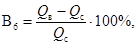
где Qв - масса смеси до высушивания;
Qв - масса смеси после высушивания.
Вторую часть необходимо промыть в проточной воде в сосуде высотой около 30 см так, чтобы удалился весь цемент. Промывать следует до тех пор, пока вода не станет чистой, но не более 20 мин. После этого пробу следует высушить, охладить и взвесить. Высушенный остаток даст суммарную массу мелкого и крупного заполнителя; ее необходимо просеять и определить зерновой состав. Вычитая из навески бетонной смеси массу воды и заполнителей, определяют количество цемента.
Для точности определения параллельно с отбором пробы бетонной смеси необходимо взять (из бункера или с транспортерной ленты) пробы заполнителей, идущие в замес, в количестве 5 - 10 кг, их высушить, определить влажность и водопоглощение (для щебня), зерновой состав, содержание отмучиваемых частиц. Количество воды затворения в бетонной смеси необходимо определять с учетом влажности и водопоглощения щебня.
Чтобы установить содержание цемента, из общего количества отмытых частиц следует вычесть количество отмучиваемых частиц в заполнителе.
6.19. Объемную массу бетонной смеси при необходимости следует контролировать на ЦБЗ не реже 1 раза в смену и во всех случаях изменения дозировки компонентов в соответствии с ГОСТ на дорожный бетон.
6.20. Ежедневно следует сверять количество бетонной смеси, отпущенной с завода и уложенной в покрытие. При расхождении свыше 3 % производят тщательную проверку, чтобы установить причины расхождения и устранить их.
Контроль прочности и морозостойкости бетона
6.21. Контроль и оценку прочности бетона при строительстве монолитных покрытий и оснований следует проводить при испытании образцов на растяжение при изгибе в возрасте, указанном в проекте, с использованием статистического метода в соответствии с требованиями ГОСТ 18105-86 и СНиП 3.06.03-85. Если в проекте возраст не указан, то прочность бетона определяется в возрасте 28 сут. При необходимости дополнительно разрешается определять фактическую прочность бетона на сжатие по ГОСТ 10180-78*.
6.22. Контроль прочности бетона должен осуществляться на бетонном заводе при соблюдении условий нормального хранения, контрольных образцов.
Контроль и оценку прочности бетона на месте бетонирования следует проводить только в том случае, если в проекте установлены требования к прочности бетона на месте бетонирования при твердении его в условиях покрытия.
6.23. Приемка бетона по прочности производится по каждой партии бетона. Длительность изготовления партии бетона следует принимать, как правило, равной одной неделе.
6.24. Предварительную оценку прочности бетона разрешается проводить при ускоренном твердении образцов при пропаривании. Кроме того, для ускорения контроля прочности бетона допускается испытывать образцы в возрасте 7 сут. В этих случаях необходимо установить опытным путем переходный коэффициент от прочности бетона в возрасте 7 сут или после пропаривания к прочности бетона в возрасте 28 сут в соответствии с требованиями ГОСТ 10180-78. Установленный опытным путем переходный коэффициент может быть использован при приемке бетона по прочности при условии согласования с проектной организацией, заказчиком и Союздорнии.
6.25. За анализируемый период, который следует принимать равным, как правило, 2 - 3 неделям, необходимо изготовить не менее 30 серий контрольных образцов по 3 - 4 серии в рабочий день (например, в первую смену 2 серии и во вторую - 1 - 2 серии). В последующий контролируемый период объем изготовления образцов может быть уменьшен, но не менее чем до одной серии в сутки. Серия должна состоять не менее чем из двух образцов. Отбор проб производят в соответствии с требованиями ГОСТ 18105-86. При этом на бетонном заводе пробу следует отбирать из кузова транспортного средства (автомобиля-самосвала и др.), а на месте укладки - после выгрузки и распределения бетонной смеси по основанию. Изготовление контрольных образцов и их испытание на прочность следует осуществлять в соответствии с требованиями ГОСТ 10180-78.
6.26. Производство бетонной смеси считается хорошо налаженным, если бетон имеет средний партионный коэффициент вариации (Vп) 8 - 10 % и менее. При коэффициенте вариации более 13,5 % во избежание снижения надежности покрытия необходимо увеличить требуемую прочность бетона в соответствии с ГОСТ 18105-86 и одновременно принять меры, направленные на уменьшение среднего партионного коэффициента вариации. При коэффициенте вариации, равном или превышающем 16 %, производство бетона следует признать неудовлетворительным. В этом случае решение о приемке бетона необходимо принимать совместно с проектной организацией и Союздорнии.
При коэффициенте вариации, равном 8 % и менее, не следует снижать требуемую прочность бетона во избежание увеличения водоцементного отношения и возможного уменьшения морозостойкости бетона.
Приемку бетона по прочности следует проводить по ГОСТ 18105-86. Партия бетона может быть принята, если фактическая прочность бетона в ней будет не ниже требуемой.
6.27. В соответствии со СНиП 3.06.03-85 разрешается в необходимых случаях определять прочность бетона в покрытии испытанием выбуренных образцов-кернов. Оценку прочности бетона по результатам испытания образцов кернов следует проводить по согласованию с Союздорнии.
6.28. Выбуренные керны, как правило, следует испытывать на растяжение при раскалывании по методике, изложенной в прил. 4 к Инструкции.
Приведенное значение прочности бетона на растяжение при изгибе получают с помощью переходных коэффициентов, установленных в соответствии с требованиями ГОСТ 10180-78**.
6.21 - 6.28. (Новая редакция, Изм. № 1).
6.29. Испытания прочности бутона в готовом покрытии неразрушающим методом с помощью ультразвука следует проводить в соответствии с ГОСТ на ультразвуковой метод определения прочности. Этим методом разрешается испытывать бетонные покрытия любой протяженности, но не менее 1 км.
6.30. Морозостойкость бетона в процессе строительства должна проверяться в соответствии с указаниями ГОСТ на методы определения морозостойкости.
Контроль однородности и подвижности бетонной смеси на месте укладки
6.31. Соответствие подвижности (жесткости) смеси уплотняющей способности бетоноотделочных машин служит решающим условием, гарантирующим качество бетона в покрытии. В случае завышенной подвижности смеси поверхностный слой бетонного покрытия может оказаться ослабленным; при недостаточной ее подвижности не будут достигнуты требуемые уплотнение и отделка, а также ровность покрытия.
6.32. Подвижность (жесткость) бетонной смеси на месте укладки следует определять не менее одного раза на каждые 100 м покрытия, а также дополнительно в случае ее явного изменения.
6.33. При уплотнении смеси машинами Д-376 и ДБО-7,5 необходимо следить, чтобы на поверхности бетона не создавался излишний слой раствора и цементного теста с избытком воды (что возможно при повышенной подвижности смеси). В этом случае следует немедленно внести изменения в состав бетонной смеси.
6.34. При пониженной подвижности смеси, укладываемой бетоноукладчиком со скользящей опалубкой, следует скорость движения бетоноукладчика привести в соответствие с фактической подвижностью смеси. В случае применения бетоноукладчиков, передвигающихся по рельс-формам, при пониженной подвижности смеси допускается многократное повторное ее уплотнение за несколько проходов машины.
6.35. При поступлении бетонной смеси, фактическая подвижность (жесткость) которой не соответствует заданной, а также при обнаружении других дефектов (расслоение, большое водоотделение, неудовлетворительная удобообрабатываемость) лаборатория должна немедленно внести соответствующие изменения в рабочий состав бетонной смеси.
6.36. Контроль объема вовлеченного в бетонную смесь воздуха на месте бетонирования должен производиться не реже 1 раза в смену и не менее 1 раза на каждые 200 м покрытия.
Контроль подготовки основания, уплотнения бетонной смеси и отделки покрытия
6.37. При строительстве основания и выравнивающего слоя следует проверять качество и степень их уплотнения, соответствие поперечного профиля проекту, ровность, правильность и надежность установки копирных струн и рельс-форм, обеспечивающих получение бетонного покрытия требуемой ровности и толщины.
6.38. Непосредственно перед укладкой смеси следует проверять достаточность увлажнения выравнивающего слоя из необработанного песка или песчаного основания для предупреждения отсоса воды из бетона.
6.39. При уплотнении бетона и отделке поверхности покрытия должен проводиться систематический контроль устойчивости кромок и боковых граней и толщины покрытия, качества уплотнения, отделки и ровности поверхности покрытия.
6.40. При устройстве деформационных швов следует проверять своевременность нарезки, соблюдение геометрических размеров паза, качество кромок, подготовку паза для заполнения герметирующими материалами и процесс заполнения.
6.41. При уходе за бетоном следует вести журнал, проверять своевременность выполнения мероприятий по уходу, защитную способность пленкообразующих материалов, достаточность принятых мер по уходу, чтобы предотвратить появление температурно-усадочных трещин.
6.42. Качество ухода за бетоном с применением пленкообразующих материалов следует проверять не менее двух раз в смену, а также дополнительно в сомнительных случаях на участках покрытия размером 20´20 см. Для этого сформировавшуюся на бетоне пленку необходимо промыть водой и удалить оставшуюся влагу, впитывая ее чистой ветошью. По подготовленной таким образом поверхности следует разлить 10 %-ный раствор соляной кислоты или 1 %-ный раствор фенолфталеина. Вспенивание или покраснение допустимо не более чем в двух точках на 100 см2 поверхности пленки. В противном случае необходимо поверхность дополнительно покрыть слоем пленкообразующего материала.
7.1. Приемка работ должна производиться в соответствии с требованиями СНиП по строительству автомобильных дорог с нижеследующих указаний.
Приемке подлежат: скрытые работы с целью определения возможности дальнейшего производства работ; законченные конструктивные элементы, перечень которых приведен в разделах Инструкции; законченное бетонное покрытие.
Приемка скрытых работ должна быть повторена, если последующие работы будут начаты с большим перерывом.
7.2. При строительстве бетонных покрытий, приемке с составлением актов освидетельствования скрытых работ и оценкой их качества и соответствия проекту подлежат: подготовка основания и устройство выравнивающего слоя; установка в покрытие закладных элементов швов (прокладок, штырей, крепления) и арматуры; установки рельс-форм или копирных струн.
7.3. Покрытие следует принимать, как правило, по достижении бетоном проектной прочности. Покрытие должно быть предъявлено к приемке с очищенной поверхностью. Мелкие дефекты (неровности, раковины) необходимо устранить.
7.4. Проверку соответствия выполненных работ проекту, СНиП по строительству автомобильных дорог, а также данной Инструкции следует проводить с применением геодезических инструментов.
Вертикальные отметки продольного и поперечного уклонов сверяют с проектными нивелиром, а поперечный уклон - шаблоном.
7.5. Качество бетонных работ и прочность покрытия необходимо проверять и оценивать: по материалам технического контроля на ЦБЗ и на месте укладки; наружным осмотром бетонного покрытия в местах вскрытий; испытанием (при необходимости) бетонных образцов-кернов, взятых из покрытия.
На отобранные керны следует составлять акты с указанием времени и места их взятия.
7.6. При приемке законченного бетонного покрытия необходимо проверять:
качество исходных материалов и их соответствие проекту, состав смеси, соблюдение технологического режима приготовления смеси (по данным лабораторной документации для принимаемых участков покрытия и текущего технического контроля в процессе работ);
состояние поверхности покрытия - наличие неровностей, раковин, наплывов, трещин, правильность устройства и разделки швов, отделку краев покрытия (тщательным внешним осмотром всего принимаемого участка покрытия);
правильность установки рельс-форм или копирных струн, арматуры и конструкций швов расширения и сжатия (по данным актов промежуточной приемки скрытых работ и журналов технического контроля в процессе работ);
качество бетона (по данным лабораторных испытаний образцов, хранившихся в стандартных и в одинаковых условиях с построенным бетонным сокрытием). При необходимости для установления качества бетона, его структуры, прочности и толщины покрытия по назначению приемочной комиссии следует также высверливать керны на каждом километре покрытия не менее трех, диаметром не менее 130 мм, на расстояниях в поперечном сечении: 0,5 м от наружных краев покрытия и 0,5 м от его продольной оси;
толщину краев покрытия на каждом пикете;
ширину покрытия - один раз на пикет;
продольный профиль - контрольным нивелированием не менее чем 10 % сдаваемого участка;
ровность в продольном направлении и поперечные уклоны - на 10 - 15 % длины сдаваемого участка дороги захватками длиной по 300 - 400 м, выбираемыми при визуальном осмотре либо на основе графической записи, получаемой с помощью автомобильной установки ПКРС-2.
На каждой захватке через равные расстояния следует выполнить 100 - 130 измерений просветов или непрерывную графическую запись неровностей на расстоянии 0,75 - 1 м от кромки полосы движения; 80 - 100 измерений поперечных уклонов рейкой с уровнем.
Разницу в уровне поверхности покрытия у стыков смежных плит необходимо контролировать не менее чем на трех стыках каждого пикета; на каждом стыке следует замерять просветы в двух местах: у оси и на расстоянии 0,75 - 1 м от кромки.
7.7. Допускаемые отклонения от проектных размеров при приемке должны соответствовать требованиям СНиП по строительству автомобильных дорог.
7.9. При инспекционном и приемочном контроле просветы под рейкой с клином (промерником) следует измерять в пяти контрольных точках, расположенных на расстоянии 0,5 м от концов рейки и друг от друга. Прикладывать рейку к поверхности покрытия следует через равные расстояния.
Для аналогичных целей разрешается использовать передвижные многоопорные рейки с записывающим устройством. Их показания следует переводить в показания обычной рейки с клином по уравнениям, приведенным в инструкции по работе с передвижной многоопорной рейкой ПКР-4М для контроля ровности дорожных покрытий, либо оценку следует производить непосредственно по результатам измерений.
7.11. С помощью перечисленных в п.п. 7.8 - 7.10 приборов следует контролировать параметры единичных неровностей (операционный контроль) либо производить детальный статистический контроль ровности участков небольшого протяжения. Для предварительного контроля ровности на участках значительного протяжения (2 - 50 км и более) разрешается использовать автомобильные установки типа ПКРС. Полученная графическая запись показателя ровности в одном из режимов позволяет наметить места для детальных измерений с помощью реек, так как между показаниями ПКРС и рейками существует приближенная корреляционная зависимость.
7.12. У бетонных покрытий следует оценивать также качество отделки поверхности и швов. Когда оценки ровности поверхности, отделки поверхности и швов разные, общую оценку качества принимаемого покрытия устанавливают по низшему показателю.
7.13. При определении алгебраической разности отклонений отметок точек в случае невозможности высотной привязки ровность следует контролировать по разности между вычисленной и полученной при нивелировании относительным отметкам на средней из каждых трех соседних точек. Этот способ не следует применять в местах перелома продольного профиля.
7.14. Все дефекты, отмеченные при приемке, а также отступления от проекта с указанием их количества и размеров должны быть занесены в акт с заключением о качестве работ. Указанные в акте дефекты необходимо устранить в сроки, назначенные комиссией.
Общие положения
8.1. При строительстве бетонных покрытий и оснований следует соблюдать Правила техники безопасности при строительстве, ремонте и содержании автомобильных дорог и требования СНиП «Техника безопасности в строительстве», а также правила техники безопасности, изложенные в инструкциях по эксплуатации соответствующих машин.
8.2. Мероприятия по ограничению и устранению вредного воздействия производственных шумов и вибрации следует осуществлять в соответствии с Временными санитарными нормами и правилами по ограничению шума на производстве и Временными санитарными правилами и нормами по ограничению вибрации рабочего места, утвержденными Госсанинспекцией СССР.
Требования техники безопасности на бетонном заводе
8.3. К работе на машинах и установках ЦБЗ следует допускать лиц, достигших 18 лет, имеющих удостоверение на право управления машинами, прошедших медицинский осмотр и необходимый инструктаж на рабочем месте.
Курсовое обучение по технике безопасности должно быть организовано администрацией. Результаты инструктажа и обучения следует фиксировать в соответствующих документах.
8.4. Площадки для ЦБЗ надлежит выбирать в соответствии с общими правилами, изложенными в СНиП по технике безопасности в строительстве.
В населенных пунктах территория ЦБЗ должна быть ограждена.
Территория ЦБЗ, проезды, проходы, галереи и рабочие места должны быть в темное время суток и при плохой видимости хорошо освещены.
8.5. ЦБЗ должны быть оборудованы средствами тушения пожара. Все противопожарные мероприятия, осуществляемые на территории ЦБЗ, подлежат согласованию с местным отделением Госпожнадзора. Места, опасные в пожарном отношении (компрессорная установка, узел по приготовлению добавок, источники питания бетоносмесительных установок и т.д.), должны быть снабжены противопожарным оборудованием.
8.6. Лицам, не связанным с обслуживанием машин и установок ЦБЗ, запрещается находиться в зоне работ.
8.7. На ЦБЗ рабочие и операторы цементных складов должны работать в респираторах, защитных очках и спецодежде.
8.8. Рабочие площадки заводов, переходы, галереи, лестницы должны быть чистыми. Запрещается загромождать рабочие площадки. Места, загрязняемые цементной пылью, должны регулярно очищаться.
8.9. Перед началом работы машинист должен проверить состояние машины и устранить неисправности, убедиться в отсутствии в машинах и на транспортерных лентах посторонних предметов, осмотреть приводную и натяжную станции конвейерной линии, роликовые опоры, проверить состояние мест погрузки и выгрузки, подготовленность их к приему и выдаче материалов, а также состояние загрузочных и разгрузочных устройств.
В случае готовности завода к работе сменный мастер обязан сделать запись в книге дежурств, которая ежедневно должна проверяться дежурным механиком.
8.10. Перед пуском завода необходимо дать установленный звуковой сигнал и включить на 1 - 2 с электродвигатели (предупредительный пуск). После предупредительного пуска и паузы в 10 - 15 с электродвигатели разрешается включать для работы под нагрузкой. Запрещается работа при поврежденных сигнальных устройствах.
После пуска двигателей разрешается открывать заслонки питающих бункеров, воронок, течек и пускать в работу дозирующие устройства.
8.11. Части трансмиссий (ремни, канаты, цепи, валы и т.д.) должны быть ограждены на высоту не менее 2 м от пола и иметь сплошную обшивку снизу не менее 10 см от пола при металлической зашивке и 20 см при деревянной; горизонтально расположенные трансмиссии следует ограждать со всех сторон.
Проходы под трансмиссиями должны быть высотой не менее 2 м и ограждены прочной надежно укрепленной конструкцией.
8.12. Транспортерные галереи должны быть оборудованы системой экстренной остановки.
8.13. При установке конвейеров в галереях, навесах и траншеях необходимо оставить проход не менее 0,75 м между стенкой и наиболее выступающей частью конвейера. Расстояние между наиболее высокой частью конвейера и потолком должно быть не менее 0,6 м, а между рабочей ветвью конвейерной ленты и полом - не менее 0,8 м. Конвейерная галерея должна быть освещена.
Переходы через конвейерные линии значительной длины должны устраиваться в виде мостков шириной не менее 1 м, огражденных прочными перилами.
Проходы и проезды под конвейерной линией должны быть защищены от случайного падения грузов прочными навесами и козырьками.
8.14. При длительных остановках конвейера ленту нужно полностью освободить от транспортируемого материала.
8.15. Запрещается перемещать на ленте людей, оборудование и детали машин.
8.16. В конце рабочей смены при выключенных машинах конвейерную ленту, ролики и барабаны приводной и натяжной станции следует очищать от грязи и материала.
8.17. Пуск конвейеров всех типов разрешается только обслуживающим их лицам.
8.18. Автомобили-самосвалы следует направлять под погрузку бетонной смеси по звуковому или световому сигналу, подаваемому оператором ЦБЗ. Запрещается производить работы при неисправных сигнальных устройствах.
8.19. Место подъезда автомобилей-самосвалов под погрузку следует очищать от бетонной смеси после окончания смены и в период длительных перерывов.
8.20. На ЦБЗ для рабочих должны быть предусмотрены душевые с горячей и холодной водой, умывальники, туалеты, помещения с индивидуальными шкафами для хранения личной одежды и спецодежды, помещения с аптечками и баками с питьевой водой, места отдыха.
Требования техники безопасности при строительстве покрытий и оснований
8.21. До начала работ по строительству покрытий необходимо: построить подъездные пути и объезды; на границах участков выставить дорожные знаки и предупредительные надписи; оградить участок работ; направить движение транспортных средств в объезд; наметить безопасную для людей, занятых на укладке, схему заезда и выезда из зоны работы автомобилей-самосвалов, подвозящих бетонную смесь.
8.22. Запрещается посторонним людям находиться в зоне работы машин, строящих покрытие, и автомобилей-самосвалов.
8.23. В зоне укладки движение автомобилей-самосвалов разрешается только по сигналу приемщика бетонной смеси; перед началом движения водитель автомобиля-самосвала обязан подать звуковой сигнал.
8.24. Поднятые кузова автомобилей-самосвалов следует очищать скребками или лопатами с удлиненной рукояткой. Рабочие, производящие очистку, должны находиться на земле или на специальном помосте.
8.25. К управлению машинами допускаются машинисты, получившие удостоверение установленной формы, знающие конструкцию, правила управления и эксплуатации данной машины и двигателя, а также правила техники безопасности.
8.26. На площадке управления машиной запрещается находиться кому-либо, кроме машиниста и его помощника.
8.27. Нельзя работать на неисправной машине, смазывать или ремонтировать ее на ходу. Все работы по техническому обслуживанию должны выполняться на остановленной машине.
8.28. При совместной работе бетонораспределительной и бетоноотделочной машин дистанция между ними должна быть не менее 10 м. До остановки машин запрещается находиться обслуживающему персоналу между ними.
8.29. При работе ночью должно быть обеспечено надлежащее освещение машины и рабочего места.
Требования техники безопасности при устройстве швов
8.30. При устройстве швов в свежеуложенном или затвердевшем бетоне необходимо соблюдать следующие требования:
при передвижении машины рабочих не должно быть на мостике, вибронож разрешается опускать только при остановленной машине;
устанавливать строго вертикально каждым режущий диск и следить, чтобы при вращении он касался стенки шва всей плоскостью;
нарезать шов в затвердевшем бетоне только в защитных очках и при исправном защитном кожухе режущих дисков;
запрещается регулировать и передвигать машину с вращающимися дисками и работать при незафиксированном положении диска.
8.31. К работам по изоляции швов допускаются лица не моложе 18 лет, прошедшие специальный инструктаж по технике безопасности и аттестацию.
8.32. Лица, занятые на приготовлении, разогревании и транспортировании горячих мастик на основе битума, должны быть предварительно проинструктированы о безопасных способах: загрузки и разгрузки варочного котла; варки и разогревания горячих мастик; транспортирования горячих мастик.
8.33. Все работающие с мастиками должны быть обеспечены спецодеждой (хлопчатобумажными комбинезонами, резиновыми сапогами, брезентовыми рукавицами и фартуками).
Рабочие, засыпающие компоненты в котел с расплавленным битумом, должны иметь защитные очки и респираторы, а рабочие, приготовляющие тиоколовые герметики, - резиновые перчатки (медицинские) и респираторы.
8.34. Для приготовления, транспортирования и использования мастик для заливки швов разрешается пользоваться только исправными инструментами и посудой.
8.35. При варке битумно-резиновых мастик необходимо соблюдать следующие условия:
котел должен быть исправным, без трещин, с плотно прилегающей крышкой, подвешенной на канате с противовесом;
верхний край котла должен возвышаться над поверхностью земли на 1,2 м;
котел должен быть закрыт, за исключением моментов перемешивания и загрузки материалов;
котел следует загружать со стороны, противоположной топке, и только на 3/4 его емкости;
во время варки мастики металлические дверцы топки должны быть закрыты.
Не разрешается загружать в котел влажные материалы (битум, заполнители) во избежание сильного вспенивания массы, перелива ее через край котла и воспламенения.
8.36. Битумно-резиновые и битумно-полимерные мастики разрешается нагревать до температуры, не превышающей 180 °С, не допуская кипения и перелива через край котла. Нагрев необходимо контролировать термометром со шкалой не менее 250 °С, исправность термометра следует проверять каждый раз перед началом работы. Брать пробу мастики (для определения готовности) следует только специальными черпаками-лопатами.
8.37. При приготовлении грунтовки битум с бензином необходимо смешивать на расстоянии не менее 50 м от места их разогрева. Разогретый битум разрешается вливать в бензин и перемешивать деревянными мешалками. Температура битума в момент смешивания не должна превышать 70 °С. В случае воспламенения битума котел нужно плотно закрыть крышкой. Тушить горящий битум следует только сухим песком или огнетушителем, но не заливать водой.
8.38. В случае попадания на тело битумно-резиновых, битумно-полимерных, тиоколовых мастик или их составляющих необходимо срочно удалить их чистой ветошью, смоченной бензином или керосином, а затем смыть теплой водой с мылом.
8.39. Все работающие с битумно-резиновыми и битумно-полимерными мастиками должны быть ознакомлены со специальными противопожарными требованиями.
8.40. К работе на комплекте оборудования для заполнения швов тиоколовыми герметиками допускаются лица, прошедшие специальный инструктаж.
При работе заливщика швов необходимо постоянно следить за состоянием предохранительных клапанов в системе подачи сжатого воздуха. Работа при неисправных клапанах запрещается.
Запрещается снимать крышку с заливщика при наличии давления воздуха в емкости. Запрещается ремонтировать или регулировать узлы смесительного агрегата или компрессора при работающем двигателе.
Требования техники безопасности при уходе за свежеуложенным бетоном
8.41. С пленкообразующими и осветляющими жидкостями необходимо работать в комбинезонах, защитных очках и рукавицах. При работе с лаком-этиноль и материалами типа ПМ-86 следует применять противогазы или респираторы.
8.42. Открытые части тела, на которые попал пленкообразующий материал, должны быть промыты керосином, а затем теплой водой с мылом.
8.43. При транспортировании огнеопасных пленкообразующих материалов, их приготовлении и хранении следует соблюдать специальные правила противопожарной безопасности.
8.44. Битум разрешается смешивать с бензином на расстоянии, удаленном не менее чем на 50 м от места разогрева битума. Разогретый битум следует вливать в бензин (а не бензин в битум) и перемешивать деревянными мешалками. Температура битума в момент приготовления смеси не должна превышать 70 °С. Запрещается применение этилированного бензина.
8.45. При работе машин по нанесению пленкообразующих материалов необходимо соблюдать дополнительные правила, обеспечивающие безопасное ведение работ:
машины заправлять только механизированным способом (автогудронатором, насосной установкой, вакуумным устройством);
следить за исправностью шлангов и надежностью их крепления;
работать с установленным над распылителями защитным кожухом;
не работать без искрогасителя на выхлопной трубе двигателя, при неисправном и искрящем электрооборудовании.
Запрещается курить и разводить огонь вблизи работающего распределителя, о чем на распределителе должны быть соответствующие надписи.
8.46. Рабочие, занятые приготовлением, хранением, перевозкой и распределением пленкообразующих и осветляющих материалов, до начала работ должны быть ознакомлены со свойствами этих материалов и правилами по технике безопасности.
8.47. Персонал, обслуживающий машины, должен пройти обучение и получить удостоверение на право управления машиной и производства работ.
8.48. Лица, работающие с пленкообразующими материалами, должны регулярно проходить дополнительный медицинский осмотр.
8.49. Алюминиевую пудру следует хранить в упаковке предприятия-изготовителя в сухих закрытых складских помещениях при температуре не выше 35 °С. Вблизи складов пудры не должны находиться химически активные вещества. При погрузочно-разгрузочных операциях не допускается переброска банок с пудрой и перекатывание их боковой поверхностью. Алюминиевую пудру можно транспортировать всеми видами крытых транспортных средств. Банки с алюминиевой пудрой должны быть закреплены в кузове таким образом, чтобы предотвратить их перемещение, повреждение и нарушение герметичности.
Запрещается во избежание пожара курить и пользоваться открытым огнем в зоне радиусом 5 м у места работы с алюминиевой пудрой или пастой.
Для борьбы с пожаром, вызванным загоранием алюминиевой пасты или пудры, следует применять сухой песок. Нельзя для этой цели пользоваться водой.
Рабочее место, на котором готовят или распределяют суспензию алюминиевой пудры, должно быть снабжено предупреждающей надписью «Огнеопасно», «Опасная зона 5 м». На рабочем месте необходимо иметь ящик с сухим песком и лопату.
Общие сведения
В технологии бетонных работ широкое применение нашли пластифицирующие и воздухововлекающие поверхностно-активные вещества*, существенно улучшающие технологические свойства бетонной смеси (связность, нерасслаиваемость, удобообрабатываемость) и повышающие долговечность бетона в конструкции.
* Номенклатура химических добавок и их свойства приведены в «Руководстве по применению химических добавок к бетону». (М., Стройиздат, 1975).
Бетонные покрытия автомобильных дорог в процессе эксплуатации подвергаются агрессивному совместному воздействию попеременного замораживания и оттаивания и хлористых солей, применяемых для борьбы с гололедом. Обеспечение гарантированной морозостойкости дорожного бетона при одновременном воздействии мороза и хлористых солей связано с созданием в структуре бетона определенного объема воздушных пор, образующих условно-замкнутую, «резервную» пористость, воспринимающую внутренние напряжения при образовании льда.
Воздушные поры образуются при введении в бетонную смесь воздухововлекающих добавок, в частности смолы нейтрализованной воздухововлекающей (СИВ).
При введении в бетонную смесь СНВ** поверхностно-активные вещества, входящие в ее состав, являются активными микропенообразователями, способствуют образованию и удержанию в смеси воздушных пузырьков диаметром 25 - 250 мкм.
Пузырьки воздуха придают бетонной смеси большую связность и нерасслаиваемость во время технологической переработки, а также удобообрабатываемость при укладке в конструкцию.
** СНВ - абиетиновая смола, омыленная каустической содой, должна соответствовать требованиям ТУ 81-05-75-69 Министерства целлюлозно-бумажной промышленности СССР. Она изготовляется в виде твердого продукта и поставляется в деревянных бочках. Ее следует хранить в закрытых помещениях, исключающих увлажнение продукта.
Объем вовлекаемого в смесь и удерживаемого ею воздуха определяется множеством факторов: количеством добавки, зерновым составом и минералогической природой заполнителей, содержанием цемента и его химико-минералогическим составом, долей песка в смеси заполнителей, коэффициентом раздвижки щебня раствором, температурой бетонной смеси, способом и продолжительностью перемешивания. Практически воздух вовлекается растворной частью смеси и, прежде всего, зернами песка размером 0,3 - 0,6 мм. Если в песке увеличивается содержание зерен мельче 0,3 мм и особенно мельче 0,14 мм, то при одном и том же количестве добавки уменьшается объем вовлекаемого и удерживаемого в бетонной смеси воздуха.
Следует иметь также в виду, что объем воздуха, вовлеченного при данном режиме перемешивания и одном и том же количестве воздухововлекающей добавки ПАВ и прочих равных условий, увеличивается с ростом подвижности смеси, повышением коэффициента раздвижки щебня раствором и уменьшается с увеличением содержания цемента и повышением температуры смеси.
Поскольку морозостойкость бетона определяется не начальным объемом воздуха, вовлеченного в смесь при перемешивании компонентов, а объемом воздушных «условно-замкнутых» пор в структуре затвердевшего бетона, необходимо учитывать влияние технологической переработки при строительстве покрытий на объем остаточного воздуха в уплотненном бетоне.
При технологической переработке бетонной смеси начальный объем вовлеченного воздуха не остается стабильным, а уменьшается, особенно интенсивно в первые 10 - 20 мин после выгрузки из смесителя. Уменьшению объема вовлеченного воздуха способствует и переработка смеси, связанная с периодическим ее разрыхлением и уплотнением при транспортировании, выгрузке и распределении. Наконец, объем остаточного воздуха в смеси и, следовательно, в бетоне уменьшается с увеличением продолжительности вибрирования, особенно при глубинном высокочастотном виброуплотнении.
Обеспечение нормированного объема вовлеченного воздуха приводит к определенному уменьшению прочности дорожного бетона по сравнению с бетоном без воздушных пор и, следовательно, к увеличению расхода цемента. Чтобы получить дорожный бетон гарантированной стойкости против совместного воздействия мороза и хлористых солей и экономичный по расходу цемента, помимо воздухововлекающей добавки СНВ следует вводить также пластифицирующую добавку СДБ (ССБ)*, т.е. применять в дорожном бетоне комплексную добавку СНВ + СДБ (ССБ).
* Сульфитно-спиртовая барда ССБ изготовляется в соответствии с требованиями ГОСТ 8518-57. Сульфитно-дрожжевая бражка СДБ - продукт переработки ССБ, соответствующий требованиям ОСТ 81-79-74 Министерства целлюлозно-бумажной промышленности СССР.
Пластифицирующий эффект добавки СДБ (ССБ) увеличивается с повышением содержания цемента в бетонной смеси, тонкости его помола уменьшением содержания С3А, повышением начальной подвижности смеси и уменьшением крупности песка. При использовании бетонных смесей на мелких песках добавки СДБ (ССБ) способствуют вовлечению в смесь до 2 - 3 % воздуха по объему.
Следует иметь ввиду, что комплексное применение воздухововлекающей СНВ и пластифицирующей СДБ приводит к усилению их индивидуального положительного влияния на технологические свойства бетонной смеси, пластифицирующего и воздухововлекающего эффекта.
Применение воздухововлекающей и пластифицирующей добавок
Воздухововлекающая СНВ и пластифицирующая СДБ должны вводиться при приготовлении бетонной смеси в виде раствора определенной концентрации вместе с водой затворения или непосредственно в смеситель.
Добавку СНВ не следует применять в случае использования гидрофобного цемента, а добавку СДБ - при использовании пластифицированного цемента*.
* При соответствующем экспериментальном обосновании допускается применять добавку СДБ и при использовании пластифицированного цемента.
В составе бетоносмесительных установок необходимо иметь специальное оборудование для приготовления водных растворов добавок и их дозирования.
Концентрацию водного раствора добавок рекомендуется выбирать в зависимости от конструкции и точности дозировочного устройства, обычно применяют растворы 10 %-ной концентрации. Водные растворы СНВ и СДБ следует готовить в различных емкостях путем растворения в воде, нагретой до 70 - 80 °С, твердых, пластообразных или жидких концентратов. После полного растворения концентрата раствор следует пропустить через сетчатый фильтр с отверстиями до 1 мм и перелить в другую емкость. Остывший раствор необходимо довести до заданной концентрации путем добавления воды. Концентрация раствора должна определяться по его плотности ареометром в соответствии со специальными таблицами** или экспериментальными данными.
Раствор СНВ должен храниться в деревянной, стеклянной или стальной таре. Запрещается применение оцинкованной или алюминиевой посуды.
При использовании неомыленной абиетиновой смолы ее перед применением следует нейтрализовать едким натром. Неомыленную абиетиновую смолу для этого разбивают на мелкие куски и измельчают до порошкообразного состояния на шаровой мельнице, бегунах и т.д. В стеклянной или металлической посуде (кроме оцинкованной и алюминиевой) приготавливают 2 %-ный раствор едкого натра (каустической соды). После полного растворения едкого натра раствор нагревают до 70 - 80 °С и в него постепенно высыпают измельченную абиетиновую смолу в количестве 100 г на каждый литр раствора едкого натра, непрерывно перемешивая до полного растворения смолы. Окончив приготовление раствора, его объем доводят до первоначального добавлением воды. В 1 л полученного раствора будет содержаться 100 г абиетиновой смолы, что учитывают при всех расчетах дозировки раствора.
Для приготовления раствора абиетиновой смолы любой концентрации количество щелочи (каустической соды) следует брать из расчета 0,2 массовой доли щелочи, считая на сухое вещество, на одну массовую долю твердого вещества смолы.
При работе с едким натром необходимо защищать глаза защитными очками, а руки - резиновыми перчатками.
** См. «Руководство по применению химических добавок к бетону». (М., Стройиздат, 1975).
Рекомендуемая схема установки для приготовления и дозирования раствора одной добавки приведена в Технических указаниях по повышению морозостойкости бетона транспортных сооружений (ВСН 150-68 Минтрансстроя), а также в «Руководстве по применению химических добавок к бетону».
В случае применения в дорожном бетоне комплексной добавки СНВ+СДБ следует, как правило, использовать две раздельные установки для приготовления и дозирования водных растворов каждой добавки. Раствор каждой добавки следует смешивать перед введением в бетоносмеситель (в дозаторе воды) или растворы каждой добавки вводить в бетоносмеситель раздельно. Не следует заблаговременно смешивать водные растворы СНВ и СДБ.
Если используют в качестве воздухововлекающей добавки мылонафт*, его, как правило, следует вводить в смесь вместе с водой затворения.
* Мылонафт изготавливается в соответствии с требованиями ГОСТ 13302-77 «Кислоты нефтяные».
Водный раствор мылонафта необходимой концентрации следует готовить, растворяя мылонафт в воде, подогретой до 40 - 50 °С.
Мылонафт в дорожном бетоне, как и СНВ, следует применять в сочетании с добавкой СДБ.
Кремнийорганический полимер (ГКЖ-94) обладает способностью к газообразованию в бетонной смеси благодаря взаимодействию с продуктами гидролиза цемента с образованием замкнутой пористости.
Добавка ГКЖ-94 оказывает пластифицирующее действие на смеси, снижает ее расслаивание во время транспортирования и укладки, повышает водонепроницаемость бетона.
Указанная добавка повышает морозостойкость и стойкость дорожного бетона против агрессивного воздействия растворов хлористых солей и мороза.
Учитывая высокую стоимость кремнийорганических полимеров, их применение в настоящее время целесообразно только в отдельных случаях, когда бетон подвергается большому количеству циклов замораживания и оттаивания в растворах хлористых солей или снижение прочности бетона может потребовать увеличения толщины покрытия.
Технология приготовления бетонных смесей с добавкой кремнийорганического полимера ГКЖ-94
Кремнийорганический полимер ГКЖ-94 - добавка гидрофобного типа. При введении в бетон вступает в химическую реакцию с продуктами гидратации и гидролиза цемента. В результате реакций выделяется водород, образующий равномерно распределенные замкнутые поры в цементном камне и на контакте цементный камень-заполнитель. Эффект газообразования зависит от содержания добавки, щелочей в цементе, температуры твердения.
Гидрофобизирующая кремнийорганическая жидкость ГКЖ-94 коррозионно неактивна, не выделяет вредных паров или газов, легко растворяются в органических растворителях, с водой не смешивается, но образует эмульсию.
Кремнийорганический полимер ГКЖ-94 по физико-химическим показателям должен соответствовать требованиям ГОСТ:
внешний вид - бесцветная или слабо-желтая жидкость без механических примесей;
содержание активного водорода - в пределах 1,30 - 1,42 % по массе;
водородный показатель рН - не менее 6;
кинематическая вязкость при температуре 20 °С - в пределах 45 - 200 в сантистоксах.
ГКЖ-94 вводится в бетонную смесь с водой затворения в виде 50 %-ной эмульсии.
Эмульсию ГКЖ-94 50 %-ной концентрации приготовляют* в следующем порядке: готовят водный раствор стабилизатора, концентрация которого определяется видом стабилизатора. Вода должна иметь водородный показатель рН не более 7.
* Водную эмульсию ГКЖ-94 можно приготавливать в соответствии с Указаниями «Руководства по применению химических добавок к бетону».
В качестве стабилизатора можно использовать полуфабрикат для приготовления алкамона (ОС-2) или поливиниловый спирт с 10 - 15 % остаточных ацетатных групп (сольвар). В случае применения ОС-2 весовая концентрация раствора стабилизатора должна составлять 2 %, а для сольвара - 4 %. ОС-2 следует растворять в воде, нагретой до 40 - 50 °С.
Для приготовления раствора необходимое количество сольвара заливают теплой водой (40 °С) из расчета получения 4 %-ного водного раствора и оставляют на сутки.
Через сутки раствор помещают в водяную баню при температуре 70 °С для окончательного растворения сольвара, что достигается при непрерывном перемешивании.
Эмульсию ГКЖ-94 приготавливают эмульгированием 100 %-ной кремнийорганической жидкости в растворе стабилизатора в эмульсионной мешалке периодического или непрерывного действия при скорости вращения рабочего органа в пределах от 2500 до 8000 об/мин при отношении 100 %-ной жидкости ГКЖ-94 к раствору стабилизатора 1:1 по массе.
Раствор стабилизатора должен иметь температуру 15 - 20 °С. В случае приготовления эмульсии в мешалке периодического действия вначале заливают раствор стабилизатора, включают мешалку и постепенно добавляют кремнийорганическую жидкость. Время эмульгирования, считая от окончания заливки всех компонентов, должно составлять не менее 20 мин. Если приготовляют эмульсию в мешалке непрерывного действия, 100 %-ную жидкость ГКЖ-94 и раствор стабилизатора заливают одновременно в приемную воронку. Время приготовления эмульсии зависит от конструкции мешалки.
Повторное пропускание эмульсии через рабочий орган мешалки непрерывного действия необходимо, если при первом эмульгировании не образуется эмульсия заданной дисперсности.
Готовая 50 %-ная эмульсия должна содержать не менее 70 % частиц ГКЖ-94 размером до 1 мкм. Приготовление эмульсии ГКЖ-94 должно сопровождаться лабораторным контролем.
Однородность эмульсии и отсутствие в ней механических примесей определяют путем фильтрования под вакуумом через матерчатый фильтр с применением воронки Бюхнера. После фильтрования на фильтре не должно оставаться посторонних включений.
Эффективность применения ГКЖ-94 во многом зависит от качества эмульсии. При применении некачественной эмульсии (частично распавшейся) эффективность добавки резко снижается. Поэтому стабильность эмульсии, находящейся в баках бетоносмесительного цеха, нужно проверять не реже 1 раза и сутки следующим методом: в мерный цилиндр наливают 10 см3 эмульсии и 100 см3 воды. Содержимое цилиндра тщательно перемешивают в течение 1 мин и оставляют в покое на 2 ч. Эмульсия считается стабильной, если в течение 2 ч в ней не наблюдается расслаивания.
Перед приготовлением эмульсии 100 %-ную жидкость ГКЖ-94 необходимо проверять в первую очередь по ГОСТ на кинематическую вязкость. Если окажется, что жидкость по этому показателю не соответствует требованию стандарта, то она непригодна.
Для того чтобы предупредить потерю активности ГКЖ-94 (ее газообразующую способность), 50 %-ную эмульсию нужно хранить в таре из белой жести или стекла с неплотно закрытыми крышками. Хранить ее разрешается в течение 6 месяцев при использовании в качестве стабилизатора ОС-2 и до одного года при использовании в качестве стабилизатора сольвара.
Эмульсию ГКЖ-94 вводят в воду затворения непосредственно перед приготовлением очередного замеса, при этом необходимо обеспечить равномерное распределение дозы эмульсии в воде затворения. Приемные и расходные баки эмульсии должны быть изготовлены из материала, не взаимодействующего с эмульсией (белая жесть, латунь), или черного металла с защитным покрытием, например, полиуретановым лаком УР-19.
В целях упрощения способа введения эмульсии ГКЖ-94 разрешается предварительно разбавлять ее водой, но не более чем в 10 раз. Температура воды должна быть не выше 30 °С. Чтобы предупредить осаждение полимера ГКЖ-94 в такой разбавленной эмульсии, следует 1 - 2 раза в смену ее перемешивать и обязательно перед началом работы.
Для приготовления бетонной смеси с добавкой ГКЖ-94 рекомендуется применять бетономешалки принудительного действия. Бетонная смесь с добавкой ГКЖ-94 должна выходить из бетономешалки с температурой не выше 30 и не ниже 10 °С. Порядок приготовления бетонной смеси обычный.
При введении ГКЖ-94 в бетонную смесь величина водоцементного отношения должна быть уменьшена на 0,01 - 0,03 в зависимости от дозировки добавки и подвижности бетонной смеси.
ГКЖ-94 следует добавлять в бетонную смесь в количестве 0,1 - 0,2 % от массы цемента в расчете на 100 %-ную жидкость.
Содержание щелочей в портландцементах, применяемых для изготовления бетонов, с добавкой ГКЖ-94 должно быть не более 1 %. Для приготовления бетона с добавкой ГКЖ-94 допускается портландцемент и его разновидности при содержании щелочей в них более 1 % в пересчете на после подтверждения их пригодности специальными экспериментальными исследованиями.
Нельзя применять шлакопортландцемент для приготовления бетона с добавкой ГКЖ-94.
Разрешается использовать комплексную добавку СДБ+ГКЖ-94, которая, сохраняя ценные свойства, придаваемые бетону добавками полигидросилоксанов (ГКЖ-94), сообщает смесям повышенную пластичность за счет действия СДБ. Эмульсия ГКЖ-94 вводится в бетонную смесь отдельно, примерно с половиной воды затворения. Дозирование совместного раствора допускается только в случае равномерного распределения эмульсии ГКЖ-94 в нем и отсутствия скоплений частиц ГКЖ-94, видимых невооруженным глазом. Для приготовления совместного раствора ГКЖ-94 и СДБ плотность СДБ должна быть не более 1,02 г/см3, а температура не выше 30 °С.
Содержание СДБ в комплексной добавке не должно превышать 0,15 % от массы цемента, ГКЖ-94 - 0,1 - 0,2 %.
Бетонную смесь разрешается приготавливать на пластифицированном цементе с добавкой ГКЖ-94.
Рекомендуемые области применения кремнийорганических добавок
Учитывая высокую стоимость кремнийорганических добавок, рекомендуется применять ГКЖ-94 в бетонных и железобетонных конструкциях, к которым предъявляются повышенные требования по морозостойкости и прочности:
при строительстве бетонных покрытий в районах со среднемесячной температурой воздуха наиболее холодного месяца ниже -15 °С;
при строительстве отдельных участков бетонных покрытий в районах, где количество дней с гололедом превышает 40 в год;
на подъездах к крупным городам, на взлетно-посадочных полосах аэродромов, где наряду с высокой морозостойкостью требуется высокая прочность бетона.
Принцип действия прибора
Бетонную смесь, уплотненную в чаше воздухомера конструкции ЦНИИСа (рис. 1 данного приложения), после установки крышки с измерительным цилиндром заливают водой. С помощью насоса необходимо поднять давление внутри прибора и зафиксировать изменение уровня воды в измерительном цилиндре. Это изменение уровня обусловлено сжатием воздуха вовлеченного в бетонную смесь, и, согласно закону Бойля-Мариотта, зависит от количества воздуха, содержащегося в смеси при атмосферном давлении, и величины избыточного давления, создаваемого в приборе.
Рис. 1. Воздухомер конструкции ЦНИИСа:
1 - чаша прибора, в которой уплотняется бетонная смесь; 2 - коническая крышка с закрепленным на ней внутренним конусом для предохранения от размывания бетонной смеси в чаше при заливке воды в прибор; 3 - металлический цилиндр с мерной шкалой, закрепленный на конической крышке; 4 - манометр; 5 - воронка для заливки воды в прибор; 6 - ручной насос; 7 - вентиль для спуска воды из прибора после определения воздухосодержания, закрепленный в конической крышке
Общие требования к конструкции воздухомера
Чаша и крышка прибора должны иметь жесткую конструкцию, не допускающую изменение объема прибора при приложении к прибору рабочего давления.
Минимально допустимый объем чаши устанавливают в зависимости от наибольшей крупности заполнителя в бетонных смесях:
|
Наибольшая крупность крупного заполнителя, мм |
Минимальный объем чаши, л |
|
20 |
3 |
|
40 |
4 |
|
80 |
8 |
Диаметр чаши должен быть 0,75 - 1,25 ее высоты. Материал чаши и крышки должен быть стойким против действия щелочей. Внутренняя поверхность крышки должна иметь наклон к горизонту не менее 30°. Объем водомерной трубки должен равняться около 5-6 % объема чаши прибора. Дополнительное оборудование к прибору: мастерок стандартного типа, стальной стержень диаметром 16 мм и длиной 500 мм с одним закругленным концом для штыкования бетонной смеси, деревянный молоток массой 200 - 250 г, стальной стержень сечением 5´20 мм и длиной 500 мм для срезания излишка бетонной смеси в чаше, цилиндр объемом 2 - 4 л для заливки воды в прибор.
Калибровка прибора
Определение объема чаши. На фланец чаши наносят тонкий слой жира, затем чашу взвешивают. Наливают в нее воду чуть выше уровня фланца и закрывают стеклянной пластинкой так, чтобы излишки вытекли. Аккуратно обтирают чашу тряпкой, переносят на весы, снимают стеклянную пластинку и взвешивают. По разности определяют объем чаши Vц в литрах.
Определение цены деления водомерной трубки. Заливают воду в чашу прибора, накрывают ее крышкой, затягивают болты, через воронку доливают воду чуть выше верхней риски водомерной трубки. Открыв вентиль в крышке, устанавливают уровень воды на отметке «0» (рис. 2 данного приложения). Затем, подставив мерный стакан, открывают вентиль и сливают воду до отметки, отстоящей от нулевой на несколько делений (число делений роли не играет).
Рис. 2. Схема отсчетов при определении воздухосодержания в бетонной смеси:
а и в - избыточное давление равно нулю; б - избыточное давление Р;
1 - вода; 2 - бетон
Определяют объем воды (в см3), соответствующий одному делению шкалы водомерной трубки:
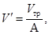
где Vтр - объем слитой воды;
А - число делений водомерной трубки, соответствующее объему слитой воды.
Затем определяют цену деления прибора в процентах от объема чаши:
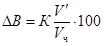
Величина К при рабочем давлении в приборе Р = 100 кПа имеет разное значение в зависимости от атмосферного давления.
|
Атмосферное давление, кПа (мм рт. ст.) |
К |
Атмосферное давление, кПа (мм рт. ст.) |
К |
|
97 (730) |
1,995 |
101,3 (760) |
2,037 |
|
98,6 (740) |
2,01 |
102,6 (770) |
2,05 |
|
100 (750) |
2,022 |
104 (780) |
2,064 |
Промежуточное значение К может быть определено интерполяцией.
Определение содержания воздуха в бетонной смеси (без поправки)
Бетонную смесь, уложенную в чашу, уплотняют с учетом принятой технологии уплотнения при укладке смеси в опалубку. Смесь укладывают в три слоя, каждый из которых штыкуют 25 раз. Затем постукивают деревянным молотком по чаше 10 - 15 раз, пока не исчезнут на поверхности бетона пустоты и не перестанут появляться большие пузырьки воздуха.
После уплотнения излишек бетонной смеси срезают металлическим стержнем, проводя им по поверхности фланца, который тщательно очищают от бетона, устанавливают на чаше крышку и прижимают ее накладными болтами, обеспечивая герметичность прибора.
Через воронку в прибор наливают воду до половины водомерной трубки. Прибор отклоняют примерно на 30° от вертикали и, используя дно как точку опоры, описывают несколько полных кругов верхним концом, одновременно осторожно постукивая рукой по конической крышке для удаления пузырьков воздуха.
Затем прибор возвращают в вертикальное положение и наполняют водой несколько выше нулевой отметки на водомерной трубке. Пену, если она появилась на поверхности воды, уничтожают, вливая через воронку незначительное количество спирта. Слегка открыв вентиль в конической крышке, приводят уровень воды к нулевой отметке на шкале прибора.
Закрыв вентиль, насосом поднимают давление в приборе несколько выше заданной величины (примерно на 10 кПа). Постукивают по стенкам чаши, и когда давление достигнет рабочего давления (обычно 100 кПа), отсчитывают уровень воды h1 с точностью до одного деления по шкале прибора (см. рис. 2 данного приложения).
Затем, открывая верхний вентиль, снижают избыточное давление до нуля и постукивают в течение 1 мин по стенкам чаши. Отмечают уровень воды h2 и вычисляют содержание воздуха в бетонной смеси:
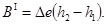
где ΔB - цена деления прибора;
h1, h2 - уровни воды при избыточном давлении и после снятия его.
Определение повторяют без добавления воды до нулевой отметки. Разница в полученных результатах не должна превосходить 0,2 %. По полученным результатам вычисляют среднюю величину.
Определение поправки на содержание воздуха в заполнителе
Вычисляют количество крупного и мелкого заполнителей, находящихся в объеме бетонной смеси, уложенной в чаше прибора:
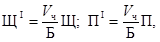
где Vч - объем чаши прибора;
Б - объем замеса;
Щ и П - количество крупного и мелкого заполнителей в замесе.
Необходимые данные об объемной массе бетонной смеси могут быть получены путем взвешивания пустой чаши и чаши, наполненной уплотненной бетонной смесью.
Приготавливают смесь из крупного ЩI и мелкого ПI заполнителей и помещают ее в чашу прибора, наполненную на 1/3 водой. При этом часть мелкого заполнителя оставляют. Перемешивают смесь заполнителей с водой до полного их смачивания. Перемешивание не должно приводить к заметному воздухововлечению. Пену удаляют при помощи фильтровальной бумаги. После этого постукивают по стенкам чаши и слегка штыкуют 10 раз верхний слой. Остаток мелкого заполнителя вводят при перемешивании.
Заполнители выдерживают в воде 5 мин, удаляют всю пену, тщательно очищают фланцы чаши и собирают прибор, как описано выше. Затем определяют количество воздуха в смеси заполнителей:
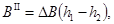
Вычисление воздухосодержания в бетонной смеси (с поправкой)
Воздухосодержание в бетонной смеси подсчитывают по формуле:
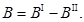
1. Методика испытания бетонных кернов на сжатие
Общие положения
1.1. Керны, выбуренные из бетонного покрытия дороги или аэродрома, следует испытывать на сжатие по схеме, изображенной на рис. 1 данного приложения. Диаметр керна должен быть не менее трехкратного наибольшего номинального размера крупной фракции примененного в бетоне крупного заполнителя, а высота - не менее его диаметра.
Рис. 1. Схема испытания керна на сжатие:
1 - плита пресса; 2 - бетонный керн; h - высота керна; d - диаметр керна; P - сжимающее усилие
1.2. При данном испытании, чтобы избежать искажения результатов, необходимо соблюдать следующие условия:
торцевые плоскости кернов, по которым производится передача давления от плит пресса на керн, должны быть ровными, без взбугриваний и раковин;
обе плоскости должны быть параллельны между собой.
Как правило, бетонные керны не удовлетворяют этим условиям, поэтому перед испытанием должны быть соответствующим образом обработаны.
Подготовка кернов к испытанию
1.3. Бетонные керны чаще всего имеют одну относительно ровную торцевую поверхность (верхнюю), которая соответствует лицевой поверхности покрытия. Подготовка кернов к испытанию должна включать:
осмотр, при котором керны, имеющие превышение точек торцевой поверхности друг над другом более чем на 15 мм (рис. 2 данного приложения), бракуют или подвергают предварительной механической обработке;
механическую обработку, т.е. керны с δmax > 15 мм (см. рис. 2) обрабатывают с помощью алмазных, карборундовых дисков или шлифовальных кругов;
устройство насадки или «подливки» на торцевых поверхностях кернов (при δmax £ 15 мм). Этот этап самый ответственный в подготовке кернов к испытанию.
Рис. 2. Примеры определения δmax
1.4. Насадку следует устраивать из цементного теста. Цемент должен быть активностью не менее 40 МПа; В/Ц - близкое к нормальной густоте цементного теста. Чтобы ускорить устройство насадки, в цементное тесто рекомендуется вводить хлористый кальций до 3 % от массы цемента. Применение ускорителя твердения позволит сократить продолжительность твердения цементного теста (табл. 1). Для обеспечения параллельности торцевых плоскостей керна необходимо применять выверочный шаблон (рис. 3 данного приложения).
Рис. 3. Схема выверочного шаблона (размеры в мм):
1 - площадка; 2 - ребра, на которые устанавливают стеклянную пластину с цементным тестом; 3 - фиксирующий уголок (100´100´5 мм); 4 - кронштейны, укрепляющие фиксирующий уголок 3 к площадке 1 под прямым углом относительно ребер 2; 5 - обрабатываемый керн
1.5. Порядок работ при устройстве насадки следующий:
готовят цементное тесто нужной консистенции на чистой воде или на растворе хлористого кальция при тщательном перемешивании;
торцевые поверхности керна обрабатывают металлической щеткой, очищают и увлажняют;
цементное тесто наносят на нижнюю (наиболее неровную) торцевую поверхность керна для предварительного выравнивания (первый прием) так, чтобы поверхность цементного теста была на одном уровне с наивысшей точкой обрабатываемой поверхности керна после некоторого уплотнения теста легким постукиванием другим торцом керна о стол (рис. 4 данного приложения) или на встряхивающем столике.
Рис. 4. Первый прием изготовления насадки:
1 - керн, установленный нижним торцом вверх; 2 - «опалубка» из плотной бумаги (ватман); 3 - шпагат, крепящий опалубку к керну; 4 - цементное тесто; 5 - горизонтальный стол
Для выполнения этой операции предварительно на обрабатываемом торце делают своего рода опалубку из плотной бумаги (например, ватмана), скрепив ее шпагатом и смочив внутреннюю поверхность водой;
нанесенное цементное тесто выдерживают определенное время (см. табл. 1), покрытым влажной тканью при t = 15 ¸ 20 °С;
на тот же торец наносят второй выравнивающий слой цементного теста минимальной толщины с использованием выверочного шаблона (второй прием) следующим образом: на ребра основания выверочного шаблона устанавливают ровное стекло, покрытое сверху мокрой тонкой бумагой (например, газетной); на эту бумагу укладывают цементное тесто слоем 5 - 7 мм и площадью, несколько превышающей площадь торца керна; на цементное тесто осторожно устанавливают керн нижней торцевой поверхностью, на которую уже нанесен первый слой, надавливая его так, чтобы образующие цилиндрической поверхности керна плотно прилегали к полкам вертикального уголка шаблона; после этого лишнее тесто вокруг керна удаляют, цилиндрическую поверхность у основания заглаживают, прикрывают влажной тканью и выдерживают необходимое время (см. табл. 1); затем керн переворачивают, торцевую плоскость накрывают влажной тканью и выдерживают под ней до момента испытания (см. табл. 1);
наносят выравнивающий слой из цементного теста на верхнюю торцевую поверхность керна; операции при этом совершенно аналогичны описанным выше.
1.6. Керн с изготовленными насадками следует хранить до испытания в нормальных условиях (см. табл. 1).
Таблица 1
|
Время выдерживания цементного теста, ч |
||
|
с добавлением 3 % хлористого кальция |
без добавления хлористого кальция |
|
|
Первый прием устройства насадки из цементного теста на нижней торцевой поверхности керна |
2 |
6 |
|
То же второй прием................................................... |
3 |
17 |
|
Устройство насадки из цементного теста на верхней торцевой поверхности керна |
3 |
24 |
|
Выдерживание керна с устроенными насадками перед испытанием в нормальных тепло-влажностных условиях |
40 |
145 |
|
Итого |
48 ч, или 2 сут |
192 ч, или 8 сут |
Примечание. Все работы по устройству насадок у кернов должны производиться в помещении с температурой от +15 до +20 °С.
Испытание
1.7. Подготовленные к испытанию на сжатие керны необходимо испытывать на тех же прессах, что и стандартные бетонные образцы-кубы. Керн должен быть установлен торцевой поверхностью на середину нижней плиты пресса, тщательно соблюдая параллельность между верхним торцом и верхней плитой пресса, подвергнут сжатию до полного разрушения и определено разрушающее усилие Р.
Подсчет результатов
1.8. Перед испытанием надо измерить высоту и диаметр керна с точностью до 1 мм. Высоту следует определять между торцевыми плоскостями (по насадке) в четырех местах по двум взаимно перпендикулярным плоскостям. При этом расчетной высотой является среднее арифметическое значение из четырех измерений. Диаметр следует определять в трех местах по высоте керна: посередине и у торцов по телу бетона на границе с насадкой дважды в каждом случае по взаимно перпендикулярным направлениям. За расчетный диаметр следует принимать среднее арифметическое значение из шести измерений. Диаметр керна необходимо измерять штангенциркулем.
Предел прочности бетона при сжатии керна (МПа) следует определять по формуле:
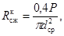
где P - разрушающее усилие, Н;
dср - диаметр керна, см.
1.9. На сжатие можно испытывать керны разных размеров и с различными отношениями h:d (но с обязательным соблюдением следующих условий: диаметр керна должен быть не менее трехкратного наибольшего номинального размера крупной фракции примененного в бетоне крупного заполнителя и h:d ³ 1). Полученный предел прочности бетона на сжатие должен быть приведен к пределу прочности бетона на сжатие стандартного куба размером 15´15´15 см. Этот пересчет производится по формуле:
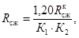
где
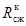
K1 - коэффициент, учитывающий влияние на прочность бетона соотношения h:d и определяемый по графику (рис. 5);
K2 - коэффициент, учитывающий влияние на прочность бетона диаметра керна (при h:d = 2) и определяемый по графику (рис. 6).
1.10. Пример 1. Керн размерами h = 18 см и d = 12 см показал предел прочности бетона при сжатии = 31 МПа. Требуется установить кубиковую прочность данного бетона.
Отношение h:d = 18:12 = 1,5.
По графику (см. рис. 5) находим K1= 1,04.
Для d = 12 см по графику (см. рис. 6) находим K2 = 1,02.
По формуле определяем
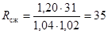
Рис. 5. Зависимость прочности бетона при сжатии от отношения h к d
Рис. 6. Влияние диаметра керна на прочность бетона при сжатии (при h:d = 2)
1.11. Пример 2. Керн размерами h = 15 см и d = 15 см показал предел прочности бетона при сжатии = 34 МПа. Требуется установить кубиковую прочность данного бетона.
Отношение h:d = 1.
Согласно графикам (см. рис. 5 и 6), K1 = 1,17 и K2 = 1,0.
По формуле определяем
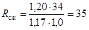
2. Методика испытания бетонных кернов на раскалывание
Общие положения
2.1. Керны, выбуренные из бетонного покрытия дороги или аэродрома, разрешается испытывать на растяжение при раскалывании по схеме, изображенной на рис. 7. Диаметр керна должен быть не менее трехкратного наибольшего номинального размера крупной фракции примененного в бетоне заполнителя, а высота - не менее его диаметра.
Рис. 7. Схема испытания кернов на раскалывание:
1 - плиты пресса; 2 - бетонный керн; 3 - прокладки из трехслойной фанеры шириной 0,1d; d - диаметр керна; P - сжимающее усилие
Подготовка кернов к испытанию
2.2. Бетонные керны, выбуренные из покрытия, имеют неровную цилиндрическую поверхность. Их нельзя испытывать на раскалывание по аналогии с бетонными цилиндрическими образцами, приготовленными в формах. Подготовка кернов к испытанию на раскалывание, как правило, должна включать устройство подливки из цементного теста по двум диаметрально противоположным образующим кернов, в плоскости которых намечается произвести раскол, на всю его длину шириной 23 - 25 мм и толщиной 3 мм (рис. 8). Для этого необходимо использовать кондуктор-обоймы.
Рис. 8. Схема устройства подливки вдоль керна по двум образующим с помощью кондуктора-обоймы:
1 - бетонный керн; 2 - продольная подливка; 3 - полуобоймы; 4 - хомут, скрепляющий две полуобоймы; 5 - крепление хомутов; d - диаметр керна
2.3. Подливку из цементного теста разрешается приготовлять с В/Ц, близким к нормальной густоте. Для ускорения твердения в цементное тесто рекомендуется вводить хлористый кальций в количестве 3 % от массы цемента. Применение ускорителя твердения сокращает время твердения цементного теста (см. табл. 2).
2.4. При устройстве продольной подливки порядок работ может быть принят следующим:
керн заключают в кондуктор-обойму;
на очищенную и увлажненную полосу наносят цементное тесто и заглаживают гладилкой (рис. 9 данного приложения);
через определенное время (см. табл. 2) кондуктор-обойму переворачивают на 180° и также устраивают подливку вдоль другой образующей;
после выдержки подливок под влажной тканью (см. табл. 2) осторожно удаляют опалубку.
Рис. 9. Гладилка для обработки поверхности продольной подливки:
1 - гладилка; 2 - рабочая поверхность; 3 - ручка; r - радиус керна
Керны с устроенными подливками хранят до момента испытания в нормальных условиях (табл. 2).
Таблица 2
|
Время выдерживания цементного теста, ч |
||
|
с добавлением 3 % хлористого кальция |
без добавления хлористого кальция |
|
|
Устройство первой продольной подливки........... |
2 |
6 |
|
То же второй.................................................................. |
4 |
20 |
|
Выдерживание керна с подливками в нормальных тепло-влажностных условиях перед испытанием |
42 |
142 |
|
Итого |
48 ч, или 2 сут |
168 ч, или 7 сут |
Примечание. При размещении керна в кондуктор-обойме нужно сделать так, чтобы в прорези между полуобоймами попали образующие равной длины.
Испытание
2.5. Подготовленные керны следует испытывать на раскалывание на прессах с усилием 300 - 400 кН (рис. 10 данного приложения).
Сжатие керна должно производиться при скорости возрастания нагрузки 0,06 - 0,07 МПа в секунду до полного разделения на две половинки. При этом следует определить разрушающее усилие Р.
Рис. 10. Схема испытания на раскалывание керна с продольными подливками:
1 - керн; 2 - продольные подливки; 3 - фанерная прокладка; 4 - плита пресса; Р - сжимающее усилие
Подсчет результатов
2.6. Предел прочности бетона на растяжение при раскалывании (МПа) керна следует определять по формуле
где P - разрушающее усилие, Н;
d - диаметр керна, см, определяемый как среднее значение из четырех измерений (по два взаимно перпендикулярных на обоих торцах керна с точностью до 1 мм);
δ - толщина подливки, см (обычно равна 0,3 см);
h - высота керна, см, определяемая с точностью до 1 мм как среднее значение из трех измерений по формуле
h1 и h3 - размеры по образующим керна в плоскости разрушения;
h2 - высота по оси керна в плоскости разрушения.
Примечание. Расчетную высоту керна h определяют после испытания на раскалывание по результатам измерений в плоскости разрушений.
2.7. Приведенный предел прочности бетона на растяжение при изгибе следует определять по формуле
где K - переходный коэффициент, значение которого находится в пределах 1,5 - 1,9 (рекомендуется уточнять при подборе состава бетона, при отсутствии экспериментальных данных допускается принимать значение коэффициента равным 1,7);
- предел прочности бетона на растяжение при раскалывании.
2.8. Пример. При испытании на раскалывание керна h = 24 см и d = 13,2 см потребовалось разрушающее усилие Р = 149000 Н. Требуется определить предел прочности бетона на растяжение при изгибе.
Определяем предел прочности бетона на растяжение при раскалывании:
МПа.
Определяем приведенный предел прочности бетона на растяжение при изгибе
МПа.
СОДЕРЖАНИЕ